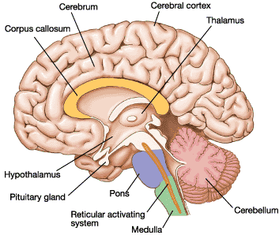
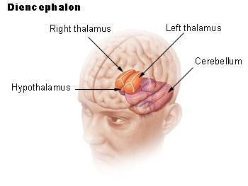
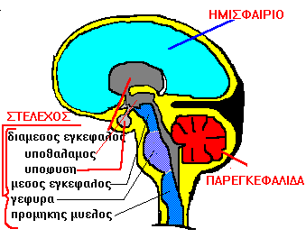
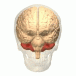
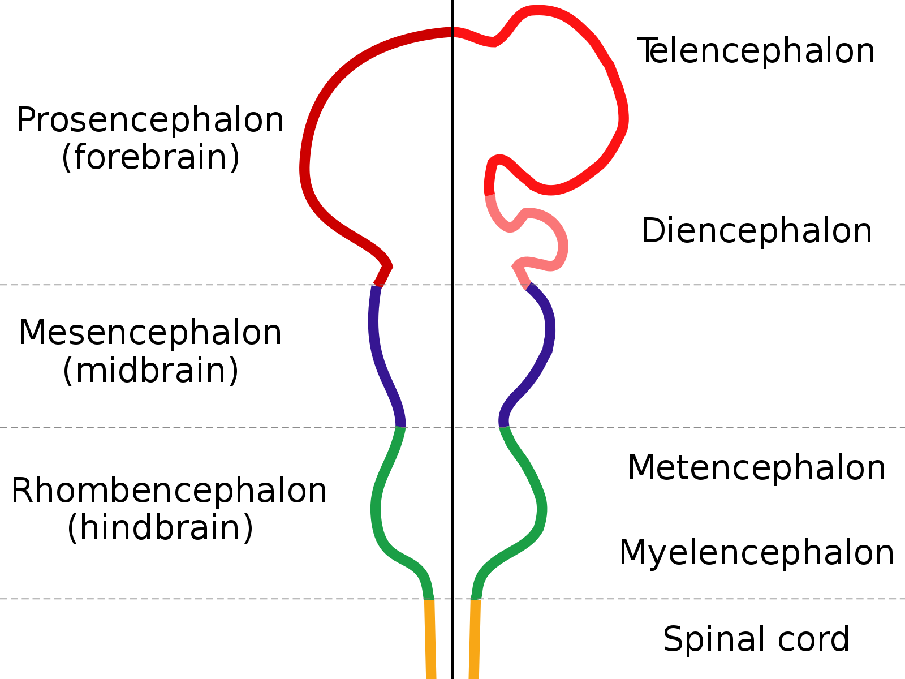
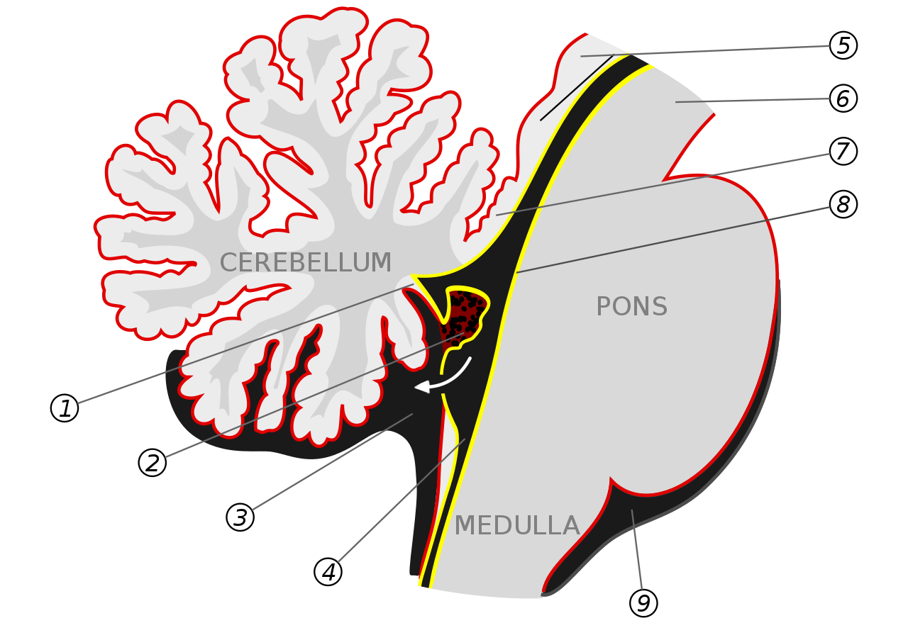

overview of organBrain
description::
× Mcsh-creation: {2020-08-24}

· The human brain is the complex, jelly-like organ weighing about 1.4 kg, located inside the skull, that serves as the central command center of the nervous system, responsible for processing sensory information, controlling thoughts, emotions, memory, movement, and regulating all vital bodily functions.
definition::
specific-definition:
· human-brain is the-mamalian-brain of a-human-body.
generic-definition:
·
part-definition:
· brain is the-upper part of the-central-nervous-system.
whole-definition:
· the-cerebrum, the-cerebellum and the-brainstem make-up the-brain.
name::
* McsEngl.McsHlth000003.last.html//dirHlth//dirMcsh!⇒organBrain,
* McsEngl.dirMcsh/dirHlth/McsHlth000003.last.html!⇒organBrain,
* McsEngl.brain!⇒organBrain,
* McsEngl.brainHmn!⇒organBrain,
* McsEngl.human-brain!⇒organBrain,
* McsEngl.sysNervous'07_organBrain!⇒organBrain,
* McsEngl.sysNervous'organBrain!⇒organBrain,
* McsEngl.sysCentralNervous/organBrain!⇒organBrain,
* McsEngl.organ.002-brain!⇒organBrain,
* McsEngl.organ.brain!⇒organBrain,
* McsEngl.organBrain,
* McsEngl.organBrain!~McsHlth000003,
* McsEngl.organBrain!=human-brain,
====== lagoGreek:
* McsElln.όργανο.εγκέφαλος!=organBrain,
* McsElln.εγκέφαλος!=organBrain,
* McsElln.μυαλό!=organBrain,
======
"Here are translations of **“brain”** in a variety of world languages, grouped by major language families and regions:
---
## 🌍 **Europe**
* **English:** brain
* **French:** cerveau
* **German:** Gehirn
* **Spanish:** cerebro
* **Italian:** cervello
* **Portuguese:** cérebro
* **Dutch:** brein / hersenen
* **Swedish:** hjärna
* **Norwegian:** hjerne
* **Danish:** hjerne
* **Finnish:** aivot
* **Greek:** εγκέφαλος (enkéfalos)
* **Polish:** mózg
* **Czech:** mozek
* **Slovak:** mozog
* **Russian:** мозг (mozg)
* **Ukrainian:** мозок (mozok)
* **Serbian/Croatian/Bosnian:** мозак / mozak
* **Turkish:** beyin
---
## 🌏 **Asia**
### East Asia
* **Chinese (Mandarin):** 脑 (nǎo) / 脑子 (nǎozi)
* **Japanese:** 脳 (nō)
* **Korean:** 뇌 (noe)
### South Asia
* **Hindi:** दिमाग़ (dimāg) / मस्तिष्क (mastishk – formal)
* **Bengali:** মস্তিষ্ক (mostishko)
* **Tamil:** மூளை (mūlai)
* **Telugu:** మెదడు (medaḍu)
* **Malayalam:** തലച്ചോർ (thalachor)
* **Kannada:** ಮೆದುಳು (meduḷu)
* **Urdu:** دماغ (dimāgh)
* **Punjabi:** ਦਿਮਾਗ਼ / دماغ (dimāgh)
### Southeast Asia
* **Thai:** สมอง (sà-mǒng)
* **Vietnamese:** não (or bộ não)
* **Indonesian / Malay:** otak
* **Filipino (Tagalog):** utak
### Middle East
* **Arabic:** دماغ (dimāgh) / مخ (mukh – colloquial)
* **Persian (Farsi):** مغز (maghz)
* **Hebrew:** מוח (moach)
---
## 🌍 **Africa**
* **Swahili:** ubongo
* **Amharic:** አንጎል (angol)
* **Yoruba:** ọpọlọ
* **Igbo:** ụbụrụ
* **Zulu:** ubuchopho
---
## 🌎 **Americas**
* **Quechua:** uma
* **Guarani:** apytu’ũ
* **Nahuatl:** yōllōtl (historically heart-mind; for brain often uses Spanish loan)
---
## 🏛 Constructed Languages
* **Esperanto:** cerbo
* **Latin:** cerebrum / mens (mind)
---
If you'd like, I can also provide:
✔ translations in **all official UN languages**
✔ IPA pronunciation for each word
✔ etymologies and cognate families
✔ a table, flashcards, or memory mnemonics
Would you like a **bigger list** (100+ languages) or a **study-friendly version**?"
[{2025-12-09 retrieved} https://chatgpt.com/c/69386181-2da8-832e-8b70-90958958f175]
descriptionLong::
The brain is generally defined as the part of the central nervous-system that is contained in the skull. The rest of the central nervous-system -an elongated tube of nerve tissue called the spinal cord- extends from the base of the brain and is contained within the bony vertebral canal. The brain controls the activities of the body and receives information about the body's inner workings and about the outside world by sending and receiving signals via the spinal cord and the peripheral nervous-system. The brain receives the oxygen and food it needs to function by way of a vast network of arteries that carries fresh blood to every part of the brain. (See also Nervous System.)
[ Copyright 1991 Compton's Learning Company ]
===
analytic: ο εγκέφαλος είναι όργανο του sysCentralNervous.
[Αργύρης, {1994}, 85⧺cptRsc29⧺]
===
synthetic: ο εγκέφαλος αποτελείται από νευρικό ιστό.
[Αργύρης, {1994}, 239⧺cptRsc31⧺]
01_cerebrum of organBrain
name::
* McsEngl.organBrain'01_cerebrum!⇒cerebrum,
* McsEngl.organBrain'att004-cerebrum!⇒cerebrum,
* McsEngl.organBrain'cerebrum-att004!⇒cerebrum,
* McsEngl.organBrain/cerebrum!⇒cerebrum,
* McsEngl.adjeEngl.cerebral!⇒cerebrum,
* McsEngl.cerebral!~adjeEngl!⇒cerebrum,
* McsEngl.cerebrum/seríbram/!⇒cerebrum,
* McsEngl.cerebrum,
* McsEngl.forebrain'cerebrum!⇒cerebrum,
* McsEngl.telencephalon!⇒cerebrum,
====== lagoGreek:
* McsElln.ημισφαίρια-εγκεφάλου-τα!=cerebrum,
description::
· part of forebrain.
===
"The cerebrum or telencephalon is a large part of the brain containing the cerebral cortex (of the two cerebral hemispheres), as well as several subcortical structures, including the hippocampus, basal ganglia, and olfactory bulb. In the human brain, the cerebrum is the uppermost region of the central nervous system. The prosencephalon or forebrain is the embryonic structure from which the cerebrum develops prenatally. In mammals, the dorsal telencephalon, or pallium, develops into the cerebral cortex, and the ventral telencephalon, or subpallium, becomes the basal ganglia. The cerebrum is also divided into approximately symmetric left and right cerebral hemispheres.
With the assistance of the cerebellum, the cerebrum controls all voluntary actions in the human body."
[{1994} https://en.wikipedia.org/wiki/Cerebrum]
===
ημισφαίρια είναι μέρη του εγκεφάλου που καταλαμβάνουν το μεγαλύτερο μέρος.
[Αργύρης,, 86⧺cptRsc29⧺]
whole-tree-of-cerebrum::
* organBrain,
* McsEngl.cerebrum//organBrain,
01_hemisphere of cerebrum
descriptionLong::
"The human brain is divided into two hemispheres, the left hemisphere and the right hemisphere. The two hemispheres are connected by a thick bundle of nerve fibers called the corpus callosum. Each hemisphere has specific functions and is responsible for controlling different aspects of the body and mind.
The left hemisphere is often referred to as the analytical hemisphere and is responsible for logical thinking, language processing, and problem-solving. It is also involved in controlling the right side of the body.
The right hemisphere is often referred to as the creative hemisphere and is responsible for spatial awareness, intuition, and creativity. It is also involved in controlling the left side of the body.
While each hemisphere has its specific functions, they work together to allow humans to perform complex tasks and interact with their environment."
[{2023-04-25 retrieved} https://chat.openai.com/?model=text-davinci-002-render-sha]
name::
* McsEngl.cerebral-hemisphere,
* McsEngl.cerebrum'01_hemisphere,
* McsEngl.cerebrum/hemisphere,
* McsEngl.hemisphere//cerebrum,
* McsEngl.organBrain'att038-hemisphere,
* McsEngl.organBrain'hemisphere,
====== lagoGreek:
* McsElln.ημισφαίριο!=hemisphere,
description::
"The vertebrate cerebrum (brain) is formed by two cerebral hemispheres that are separated by a groove, the longitudinal fissure. The brain can thus be described as being divided into left and right cerebral hemispheres. Each of these hemispheres has an outer layer of grey matter, the cerebral cortex, that is supported by an inner layer of white matter. In eutherian (placental) mammals, the hemispheres are linked by the corpus callosum, a very large bundle of nerve fibers. Smaller commissures, including the anterior commissure, the posterior commissure and the fornix, also join the hemispheres and these are also present in other vertebrates. These commissures transfer information between the two hemispheres to coordinate localized functions.
There are three known poles of the cerebral hemispheres: the occipital pole, the frontal pole, and the temporal pole.
The central sulcus is a prominent fissure which separates the parietal lobe from the frontal lobe and the primary motor cortex from the primary somatosensory cortex.
Macroscopically the hemispheres are roughly mirror images of each other, with only subtle differences, such as the Yakovlevian torque seen in the human brain, which is a slight warping of the right side, bringing it just forward of the left side. On a microscopic level, the cytoarchitecture of the cerebral cortex, shows the functions of cells, quantities of neurotransmitter levels and receptor subtypes to be markedly asymmetrical between the hemispheres.[1][2] However, while some of these hemispheric distribution differences are consistent across human beings, or even across some species, many observable distribution differences vary from individual to individual within a given species."
[{2020-05-02} https://en.wikipedia.org/wiki/Cerebral_hemisphere]
left-hemisphere
name::
* McsEngl.organBrain'att008-left-brain,
* McsEngl.organBrain'left-brain-att008,
* McsEngl.left-hemisphere,
====== lagoGreek:
* McsElln.αριστερό-ημισφαίριο!=left-hemisphere,
description::
"Left Brain—left half of the brain; controls right side of the body; typically responsible for tasks that involve logic like science and mathematics, language and reasoning although this may be different depending upon whether the person is right- or left-handed"
[{2020-04-26} https://www.brainlab.org/get-educated/brain-tumors/learn-brain-anatomy-basics/brain-anatomy/]
analytic: αριστερό ημισφαίριο είναι το cerebrum στο αριστερό μέρος του σώματος.
whole-tree-of-left-hemisphere::
* cerebrum,
* McsEngl.left-hemisphere//cerebrum,
doing of left-hemisphere
description::
× Mcsh-creation: {2026-05-15}
ελέγχει
το δεξί χέρι,
τη γλωσσική παραγωγή και τη σύνταξη. (ικανότητα λόγου)
[Καθημερινή, {1995-03-12}, 43 Panorama]
name::
* McsEngl.left-hemisphere'doing,
right-hemisphere
name::
* McsEngl.organBrain'att009-right-brain,
* McsEngl.organBrain'right-brain-att009,
* McsEngl.right-hemisphere,
====== lagoGreek:
* McsElln.δεξί-ημισφαίριο!=right-hemisphere,
* McsElln.ημισφαίριο'δεξί!=right-hemisphere,
description::
analytic: δεξί ημισφαίριο είναι cerebrum στο δεξί μέρος του σώματος.
whole-tree-of-right-hemisphere::
* cerebrum,
* McsEngl.right-hemisphere//cerebrum,
doing of right-hemisphere
description::
× Mcsh-creation: {2026-05-15}
ελέγχει
τον προσανατολισμό
τη συνομιλία
την κλίση στα μαθηματικά
την τέχνη.
[Καθημερινή, {1995-03-12}, 43 Panorama]
name::
* McsEngl.right-hemisphere'doing,
02_longitudinal-fissure of cerebrum
name::
* McsEngl.cerebrum'02_longitudinal-fissure,
* McsEngl.cerebrum'longitudinal-fissure,
* McsEngl.organBrain'att044-longitudinal-fissure,
* McsEngl.organBrain'longitudinal-fissure-att044,
* McsEngl.longitudinal-fissure,
description::
"The longitudinal fissure (or cerebral fissure, median longitudinal fissure, interhemispheric fissure) is the deep groove that separates the two cerebral hemispheres of the vertebrate brain. Lying within it is a continuation of the dura mater (one of the meninges) called the falx cerebri.[1] The inner surfaces of the two hemispheres are convoluted by gyri and sulci just as is the outer surface of the brain."
[{2020-05-02} https://en.wikipedia.org/wiki/Longitudinal_fissure]
03_corpus-callosum of cerebrum
name::
* McsEngl.cerebrum'03_corpus-callosum,
* McsEngl.cerebrum'corpus-callosum,
* McsEngl.organBrain'att045-corpus-callosum,
* McsEngl.organBrain'corpus-callosum-att045,
* McsEngl.corpus-callosum,
description::
"The corpus callosum (Latin for "tough body"), also callosal commissure, is a wide, thick nerve tract, consisting of a flat bundle of commissural fibers, beneath the cerebral cortex in the brain. The corpus callosum is only found in placental mammals.[1] It spans part of the longitudinal fissure, connecting the left and right cerebral hemispheres, enabling communication between them. It is the largest white matter structure in the human brain, about ten centimetres in length and consisting of 200–300 million axonal projections.[2][3]
A number of separate nerve tracts, classed as subregions of the corpus callosum, connect different parts of the hemispheres. The main ones are known as the genu, the rostrum, the trunk or body, and the splenium.[4]"
[{2020-05-02} https://en.wikipedia.org/wiki/Corpus_callosum]
04_lobe of cerebrum
descriptionShort::
"The human brain is divided into four major lobes: the frontal lobe, parietal lobe, temporal lobe, and occipital lobe. Each lobe is responsible for different functions and has unique characteristics.
The frontal lobe is located in the front of the brain and is responsible for important cognitive functions, such as problem-solving, decision-making, planning, and social behavior. It also plays a critical role in regulating emotion and controlling movement.
The parietal lobe is located at the top of the brain, behind the frontal lobe, and is responsible for processing sensory information from the body, such as touch, pressure, and temperature. It is also involved in spatial reasoning and perception.
The temporal lobe is located on the sides of the brain and is responsible for processing auditory information and recognizing faces and objects. It is also involved in memory formation and retrieval.
The occipital lobe is located at the back of the brain and is responsible for processing visual information from the eyes. It is involved in visual perception, color recognition, and depth perception.
Overall, the four lobes of the brain work together to perform complex cognitive and behavioral functions."
[{2023-04-26 retrieved} https://chat.openai.com/?model=text-davinci-002-render-sha]
name::
* McsEngl.cerebral-lobe!⇒lobeBrain,
* McsEngl.cerebrum'04_lobe!⇒lobeBrain,
* McsEngl.cerebrum'lobe!⇒lobeBrain,
* McsEngl.cerebrum/lobe!⇒lobeBrain,
* McsEngl.brain'att037-lobe!⇒lobeBrain,
* McsEngl.lobeBrain,
* McsEngl.lobe-of-cerebrum!⇒lobeBrain,
====== lagoGreek:
* McsElln.λοβός!=lobeBrain,
description::
"The lobes of the brain were originally a purely anatomical classification, but have been shown also to be related to different brain functions. The cerebrum, the largest portion of the human brain, is divided into lobes, but so is the cerebellum. If not specified, the expression "lobes of the brain" refers to the cerebrum.
Terminologia Anatomica (1998) and Terminologia Neuroanatomica (2017) divides the cerebrum into 6 lobes.[1][2]"
[{2020-05-02} https://en.wikipedia.org/wiki/Lobes_of_the_brain]
===
analytic: λοβός είναι καθένα από τα 5 μέρη κάθε ημισφαιρίου που σχηματίζονται από τις πιό βαθειές αυλακες του.
[hmnSngo, {1995-03}]
whole-tree-of-lobeBrain::
* cerebrum,
* McsEngl.lobeBrain//cerebrum,
lobe.frontal of cerebrum
descriptionShort::
"The human frontal lobe is the largest of the four lobes in the human brain and is located at the front of the cerebral cortex. It plays a crucial role in many of the brain's higher-level functions, such as decision-making, problem-solving, planning, and social behavior.
The frontal lobe is responsible for many important cognitive processes, including attention, memory, and language. It is also involved in regulating emotions and impulse control. Additionally, the frontal lobe plays a key role in personality development and self-awareness."
[{2023-04-26 retrieved} https://chat.openai.com/?model=text-davinci-002-render-sha]
name::
* McsEngl.cerebrum'lobe.frontal!⇒lobeFrontal,
* McsEngl.organBrain'att050-lobe.frontal!⇒lobeFrontal,
* McsEngl.organBrain'lobe.frontal!⇒lobeFrontal,
* McsEngl.frontal-lobe!⇒lobeFrontal,
* McsEngl.lobeFrontal,
====== lagoGreek:
* McsElln.μετωπιαίος-λοβός!=lobeFrontal,
description::
analytic: μετωπικος λοβός είναι lobeBrain ημισφαιρίου που βρίσκεται στο μπροστινό μέρος.
[hmnSngo, {1995-03}]
generic-tree-of-lobeFrontal::
* lobeBrain,
* McsEngl.lobeFrontal:lobeBrain,
whole-tree-of-lobeFrontal::
* cerebrum,
* McsEngl.lobeFrontal//cerebrum,
Broca's-area of lobeFrontal
description::
"Broca's area: located in the left frontal lobe, this area is primarily involved in speech production and the planning and coordination of movements necessary for speech."
[{2023-04-22 retrieved} https://chat.openai.com/?model=text-davinci-002-render-sha]
name::
* McsEngl.Broca's-area,
* McsEngl.Broca's-area//lobeFrontal,
* McsEngl.lobeFrontal/Broca's-area,
* McsEngl.organBrain'att065-Broca's-area,
* McsEngl.organBrain'Broca's-area,
doing of lobeFrontal
description::
"function of human frontal lobe
The frontal lobe is the largest and most complex part of the human brain's cerebral cortex, and it plays a crucial role in a wide range of cognitive functions, including:
1. Executive function: The frontal lobe is responsible for a range of cognitive processes, including planning, decision-making, problem-solving, and working memory.
2. Motor control: The primary motor cortex, located in the frontal lobe, is responsible for controlling voluntary movement.
3. Speech production: The left frontal lobe is involved in the production of speech, including the articulation of words and the formation of sentences.
4. Emotional regulation: The prefrontal cortex, located in the frontal lobe, is involved in regulating emotions and controlling impulsive behavior.
5. Higher cognitive functions: The frontal lobe plays a critical role in a variety of higher cognitive functions, including attention, creativity, and social behavior.
Overall, the frontal lobe is essential for many of the cognitive functions that make us uniquely human, including our ability to plan, reason, and communicate effectively."
[{2023-04-26 retrieved} https://chat.openai.com/?model=text-davinci-002-render-sha]
name::
* McsEngl.lobeFrontal'doing,
lobeFrontal.SPECIFIC
description::
× Mcsh-creation: {2026-05-15}
* αριστερού ημισφαιρίου,
* δεξιού ημισφαιρίου,
name::
* McsEngl.lobeFrontal.specific,
lobe.parietal of cerebrum
descriptionShort::
"The parietal lobe is one of the four main lobes of the brain, located towards the back of the head, behind the central sulcus (a prominent groove that separates the frontal and parietal lobes)."
[{2023-04-24 retrieved} https://chat.openai.com/?model=text-davinci-002-render-sha]
name::
* McsEngl.cerebrum'lobe.parietal!⇒lobeParietal, /paráetal/,
* McsEngl.organBrain'att049-lobe.parietal!⇒lobeParietal,
* McsEngl.organBrain'lobe.parietal!⇒lobeParietal,
* McsEngl.lobeParietal,
* McsEngl.parietal-lobe/paráietal/!⇒lobeParietal,
====== lagoGreek:
* McsElln.βρεγματικός-λοβός!=lobeParietal,
description::
analytic: βρεγματικός λοβός είναι lobeBrain ημισφαιρίου που βρίσκεται πίσω από τον μετωπικό.
[hmnSngo, {1995-03}]
generic-tree-of-lobeParietal::
* lobeBrain,
* McsEngl.lobeParietal:lobeBrain,
whole-tree-of-lobeParietal::
* cerebrum,
* McsEngl.lobeParietal//cerebrum,
angular-gyrus of lobeParietal
description::
"The angular gyrus is a region of the brain lying mainly in the posteroinferior region of the parietal lobe, occupying the posterior part of the inferior parietal lobule.[1] It represents the Brodmann area 39.[1]
Its significance is in transferring visual information to Wernicke's area, in order to make meaning out of visually perceived words.[2] It is also involved in a number of processes related to language, number processing and spatial cognition, memory retrieval, attention, and theory of mind."
[{2023-04-24 retrieved} https://en.wikipedia.org/wiki/Angular_gyrus]
name::
* McsEngl.angular-gyrus//lobeParietal,
* McsEngl.lobeParietal/angular-gyrus,
* McsEngl.organBrain'att064-angular-gyrus,
* McsEngl.organBrain'angular-gyrus,
doing of angular-gyrus
description::
"The angular gyrus is an important element in processing concrete and abstract concepts. It also has a role in verbal working memory during retrieval for verbal information and in visual memory for when turning written language into spoken language.[9] The left AG is activated in semantic processing requiring concept retrieval and conceptual integration. Moreover, the left AG is activated during problems of multiplication and addition requiring retrieval of arithmetic factors in verbal memory. Therefore, it is involved in verbal coding of numbers.[9]"
[{2023-04-25 retrieved} https://en.wikipedia.org/wiki/Language_center#Angular_gyrus]
name::
* McsEngl.angular-gyrus'doing,
supramarginal-gyrus of lobeParietal
description::
"Supramarginal gyrus: also located in the parietal lobe, this area is involved in phonological processing, including the perception and discrimination of speech sounds."
[{2023-04-22 retrieved} https://chat.openai.com/?model=text-davinci-002-render-sha]
name::
* McsEngl.lobeParietal/supramarginal-gyrus,
* McsEngl.organBrain'att067-supramarginal-gyrus,
* McsEngl.organBrain'supramarginal-gyrus,
* McsEngl.supramarginal-gyrus//lobeParietal,
doing of lobeParietal
description::
"The parietal lobe is one of the four main lobes of the brain, located towards the back of the head, behind the central sulcus (a prominent groove that separates the frontal and parietal lobes). It is involved in several important functions, including:
* Sensory processing: The parietal lobe plays a key role in processing information related to touch, temperature, pain, pressure, and proprioception (the sense of one's own body position and movement).
* Spatial awareness and perception: The parietal lobe helps us understand the position and orientation of our bodies in space, and is involved in spatial perception, such as judging distances, sizes, and shapes.
* Attention: The parietal lobe is involved in directing and shifting attention, as well as maintaining focus on a task.
* Memory: The parietal lobe is also involved in spatial memory, including remembering the locations of objects in the environment.
Damage to the parietal lobe can lead to a range of symptoms, depending on which specific area is affected. For example, damage to the right parietal lobe can result in difficulty with spatial orientation and awareness, while damage to the left parietal lobe can affect language processing and mathematical abilities."
[{2023-04-24 retrieved} https://chat.openai.com/?model=text-davinci-002-render-sha]
name::
* McsEngl.lobeParietal'doing,
lobeParietal.SPECIFIC
description::
× Mcsh-creation: {2026-05-15}
* αριστερού ημισφαιρίου,
* δεξιού ημισφαιρίου,
name::
* McsEngl.lobeParietal.specific,
lobe.occipital of cerebrum
descriptionShort::
"The occipital lobe is a region of the brain located at the back of the head. It is responsible for processing visual information received from the eyes, including color, shape, and motion. The primary visual cortex, located in the occipital lobe, is responsible for initial processing of visual information. It is also involved in visual memory, visual spatial perception, and visually-guided movements. Damage to the occipital lobe can result in visual deficits, including difficulty recognizing objects or faces, visual agnosia, or difficulty with visual spatial perception."
[{2023-04-25 retrieved} https://chat.openai.com/?model=text-davinci-002-render-sha]
name::
* McsEngl.cerebrum'lobe.occipital,
* McsEngl.organBrain'att051-lobe.occipital,
* McsEngl.organBrain'lobe.occipital,
* McsEngl.lobeOccipital,
* McsEngl.occipital-lobe/oksípital/,
====== lagoGreek:
* McsElln.ινιακός-λοβός!=lobeOccipital,
description::
analytic: ινιακός λοβός είναι lobeBrain ημισφαιρίου που βρίσκεται στο πίσω μέρος.
[hmnSngo, {1995-03}]
The occipital lobe is the visual processing center of the mammalian brain, containing most of the anatomical region of the visual cortex. The primary visual cortex is Brodmann area 17, commonly called V1 (visual one). Human V1 is located on the medial side of the occipital lobe within the calcarine sulcus; the full extent of V1 often continues onto the posterior pole of the occipital lobe. V1 is often also called striate cortex because it can be identified by a large stripe of myelin, the Stria of Gennari. Visually driven regions outside V1 are called extrastriate cortex. There are many extrastriate regions, and these are specialized for different visual tasks, such as visuospatial processing, color discrimination and motion perception.
[http://en.wikipedia.org/wiki/Occipital_lobe]
generic-tree-of-lobeOccipital::
* lobeBrain,
* McsEngl.lobeOccipital:lobeBrain,
whole-tree-of-lobeOccipital::
* cerebrum,
* McsEngl.lobeOccipital//cerebrum,
DOING of lobeOccipital
description::
"functions of human occipital lobe
The occipital lobe is a region of the brain located at the back of the head, and it is primarily responsible for visual processing. Specifically, the occipital lobe receives and processes visual information from the eyes, and it helps us make sense of what we see in the world around us.
Some of the key functions of the human occipital lobe include:
Visual perception: The occipital lobe plays a central role in our ability to perceive and interpret visual information. It helps us recognize shapes, colors, patterns, and other visual features.
Object recognition: The occipital lobe helps us identify and recognize objects based on their visual features. This is important for tasks such as reading, driving, and navigating the world around us.
Spatial processing: The occipital lobe also helps us process spatial information, such as the distance between objects and their relative positions in space.
Visual memory: The occipital lobe is involved in storing and retrieving visual memories. This allows us to recognize familiar faces, places, and objects.
Visual attention: The occipital lobe helps us focus our attention on specific visual stimuli in our environment. This is important for tasks such as searching for a specific object in a cluttered scene.
Overall, the occipital lobe is an essential part of the brain's visual processing system, and it plays a crucial role in our ability to see, perceive, and understand the world around us."
[{2023-04-26 retrieved} https://chat.openai.com/?model=text-davinci-002-render-sha]
name::
* McsEngl.lobeOccipital'doing,
lobeOccipital.SPECIFIC
description::
× Mcsh-creation: {2026-05-15}
* αριστερού ημισφαιρίου,
* δεξιού ημισφαιρίου,
name::
* McsEngl.lobeOccipital.specific,
lobe.temporal of cerebrum
descriptionShort::
"The human temporal lobe is a region of the brain that is located on the sides of the head, near the ears. It plays a crucial role in processing sensory information related to hearing, language comprehension, and memory formation."
[{2023-04-23 retrieved} https://chat.openai.com/?model=text-davinci-002-render-sha]
name::
* McsEngl.cerebrum'lobe.temporal,
* McsEngl.organBrain'att052-lobe.temporal,
* McsEngl.organBrain'lobe.temporal,
* McsEngl.lobeTemporal,
* McsEngl.temporal-lobe,
====== lagoGreek:
* McsElln.κροταφικός-λοβός!=lobeTemporal,
description::
"The human temporal lobe is a region of the brain that is located on the sides of the head, near the ears. It plays a crucial role in processing sensory information related to hearing, language comprehension, and memory formation.
Within the temporal lobe, there are several structures, including the hippocampus, amygdala, and auditory cortex. The hippocampus is responsible for forming and consolidating memories, while the amygdala plays a role in processing emotional information. The auditory cortex is responsible for processing sound information and allowing us to understand speech and language.
Additionally, the temporal lobe is also involved in the recognition of faces and objects. Lesions or damage to the temporal lobe can result in a variety of neurological disorders, including memory loss, language impairments, and difficulty recognizing faces or objects."
[{2023-04-23 retrieved} https://chat.openai.com/?model=text-davinci-002-render-sha]
===
analytic: κροταφικός λοβός είναι lobeBrain ημισφαιρίου που βρίσκεται στα πλαγια.
[hmnSngo, {1995-03}]
generic-tree-of-lobeTemporal::
* lobeBrain,
* McsEngl.lobeTemporal:lobeBrain,
whole-tree-of-lobeTemporal::
* cerebrum,
* McsEngl.lobeTemporal//cerebrum,
hippocampus of lobeTemporal
description::
"The hippocampus is a small, curved structure located in the temporal lobe of the brain. It is involved in the formation, consolidation, and retrieval of long-term memories, as well as spatial navigation.
The hippocampus is composed of two main regions: the cornu ammonis (CA) and the dentate gyrus. The CA region is further divided into four subfields: CA1, CA2, CA3, and CA4.
The hippocampus plays a crucial role in spatial learning and memory, such as remembering the layout of a new environment or the location of objects within that environment. It is also involved in declarative memory, which is the type of memory that allows us to recall facts and events.
Damage to the hippocampus can result in memory deficits, such as anterograde amnesia (difficulty forming new memories) and retrograde amnesia (difficulty recalling past memories). Additionally, some research has suggested that the hippocampus may be involved in mood regulation and emotional processing."
[{2023-04-23 retrieved} https://chat.openai.com/?model=text-davinci-002-render-sha]
name::
* McsEngl.hippocampus,
* McsEngl.lobeTemporal/hippocampus,
* McsEngl.organBrain'att060-hippocampus,
* McsEngl.organBrain'hippocampus,
amygdala of lobeTemporal
description::
"amygdala
The amygdala is a small almond-shaped structure located deep within the temporal lobe of the brain. It is considered to be a part of the limbic system, which is involved in emotional processing and behavior.
The amygdala is known to play a key role in the processing and regulation of emotions, particularly fear and anxiety. It is also involved in the formation and retrieval of emotional memories, as well as in social behavior and decision-making.
Research has suggested that dysfunction in the amygdala may be implicated in a range of psychiatric disorders, such as anxiety disorders, depression, and post-traumatic stress disorder (PTSD)."
[{2023-04-23 retrieved} https://chat.openai.com/?model=text-davinci-002-render-sha]
name::
* McsEngl.amygdala,
* McsEngl.amygdala//lobeTemporal,
* McsEngl.lobeTemporal/amygdala,
* McsEngl.organBrain'att059-amygdala,
* McsEngl.organBrain'amygdala,
Wernicke's-area of lobeTemporal
description::
"Wernicke's area: located in the left temporal lobe, this area is primarily involved in language comprehension and the interpretation of spoken and written language."
[{2023-04-22 retrieved} https://chat.openai.com/?model=text-davinci-002-render-sha]
name::
* McsEngl.Wernicke's-area//lobeTemporal,
* McsEngl.lobeTemporal/Wernicke's-area,
* McsEngl.organBrain'att066-Wernicke's-area,
* McsEngl.organBrain'Wernicke's-area,
doing of lobeTemporal
description::
"functions of human temporal lobe
The human temporal lobe is a brain region located on the sides of the brain, roughly around the ears. It is responsible for a variety of functions, including:
Auditory perception: The temporal lobe is involved in processing and interpreting auditory information, including speech and music.
Memory: The temporal lobe plays a crucial role in forming and retrieving long-term memories, including memories of events and experiences.
Language comprehension: The left temporal lobe is involved in language comprehension, including understanding spoken and written language.
Object recognition: The temporal lobe is responsible for processing visual information related to object recognition and identification.
Emotion and social perception: The temporal lobe is involved in processing emotional and social information, including recognizing facial expressions and interpreting social cues.
Spatial navigation: The temporal lobe is involved in spatial navigation and orientation, including the ability to recognize and remember landmarks.
Multisensory integration: The temporal lobe integrates information from multiple sensory modalities to form a coherent perception of the world."
[{2023-04-26 retrieved} https://chat.openai.com/?model=text-davinci-002-render-sha]
name::
* McsEngl.lobeTemporal'doing,
SPECIFIC of lobeTemporal
description::
× Mcsh-creation: {2026-05-15}
* αριστερού ημισφαιρίου,
* δεξιού ημισφαιρίου,
name::
* McsEngl.lobeTemporal.specific,
lobe.central of cerebrum
name::
* McsEngl.cerebrum'lobe.central,
* McsEngl.lobeCentral,
* McsEngl.organBrain'att047-lobe.central,
* McsEngl.organBrain'lobe.central,
* McsEngl.central-lobe,
====== lagoGreek:
* McsElln.κεντρικός-λοβός!=lobeCentral,
description::
analytic: κεντρικός λοβός είναι lobeBrain ημισφαιρίου που δεν φαίνεται γιατί οι άλλοι τον καλύπτουν.
[hmnSngo, {1995-03}]
generic-tree-of-lobeCentral::
* lobeBrain,
* McsEngl.lobeCentral:lobeBrain,
whole-tree-of-lobeCentral::
* cerebrum,
* McsEngl.lobeCentral//cerebrum,
DOING of lobeCentral
description::
"functions of human central lobe
I'm sorry, but as an AI language model, I cannot accurately provide information on a "human central lobe". The human brain is complex and composed of different structures and regions, and there is no specific lobe that is referred to as the "central lobe"."
[{2023-04-26 retrieved} https://chat.openai.com/?model=text-davinci-002-render-sha]
name::
* McsEngl.lobeCentral'doing,
lobeCentral.SPECIFIC
description::
× Mcsh-creation: {2026-05-15}
* αριστερού ημισφαιρίου,
* δεξιού ημισφαιρίου,
name::
* McsEngl.lobeCentral.specific,
lobe.limbic of cerebrum
name::
* McsEngl.cerebrum'lobe.limbic,
* McsEngl.organBrain'att048-lobe.limbic,
* McsEngl.organBrain'lobe.limbic,
* McsEngl.limbic-lobe,
description::
"The limbic lobe is an arc-shaped region of cortex on the medial surface of each cerebral hemisphere of the mammalian brain, consisting of parts of the frontal, parietal and temporal lobes. The term is ambiguous, with some authors[who?] including the paraterminal gyrus, the subcallosal area, the cingulate gyrus, the parahippocampal gyrus, the dentate gyrus, the hippocampus and the subiculum;[1] while the Terminologia Anatomica includes the cingulate sulcus, the cingulate gyrus, the isthmus of cingulate gyrus, the fasciolar gyrus, the parahippocampal gyrus, the parahippocampal sulcus, the dentate gyrus, the fimbrodentate sulcus, the fimbria of hippocampus, the collateral sulcus, and the rhinal sulcus, and omits the hippocampus."
[{2020-05-03} https://en.wikipedia.org/wiki/Limbic_lobe]
05_cortex of cerebrum
description::
"The cerebral cortex, also known as the cerebral mantle,[1] is the outer layer of neural tissue of the cerebrum of the brain in humans and other mammals. The cerebral cortex mostly consists of the six-layered neocortex, with just 10% consisting of allocortex.[2] It is separated into two cortices, by the longitudinal fissure that divides the cerebrum into the left and right cerebral hemispheres. The two hemispheres are joined beneath the cortex by the corpus callosum. The cerebral cortex is the largest site of neural integration in the central nervous system.[3] It plays a key role in attention, perception, awareness, thought, memory, language, and consciousness. The cerebral cortex is part of the brain responsible for cognition."
[{2023-04-13 retrieved} https://en.wikipedia.org/wiki/Cerebral_cortex]
name::
* McsEngl.cerebral-cortex,
* McsEngl.cerebral-mantle!⇒cerebral-cortex,
* McsEngl.cerebrum'05_cortex!⇒cerebral-cortex,
* McsEngl.organBrain'att046-cortex!⇒cerebral-cortex,
* McsEngl.cortex-of-brain!⇒cerebral-cortex,
====== lagoGreek:
* McsElln.φλοιός-εγκεφάλου!=cerebral-cortex,
descriptionLong::
ο φλοιός των ημισφαιρίων έχει χρώμα φαιό, φαιά ουσία, ενώ το εσωτερικό λευκό, λευκή ουσία.
η επιφάνεια των ημισφαιρίων φέρει προεξοχές που λέγονται ελικες και διάφορα αυλάκια, αυλακες του εγκεφάλου.
[Αργύρης, {1994}, 87⧺cptRsc29⧺]
===
In humans, subjective experience is distinguishable from higher levels of consciousness, such as self-awareness, which requires a functioning cortex. Subjective experience involves the midbrain rather than the cortex and can continue even after massive damage to the cortex.
Insects are a very large and diverse category of beings. Honeybees have about a million neurons, which isn’t many compared to our roughly 20 billion neocortical neurons, let alone the 37 billion recently found in the neocortex of a pilot whale. But it is still enough to be capable of performing and interpreting the famous “waggle dance” that conveys information about the direction and distance of flowers, water, or potential nest sites. Caterpillars, as far as we know, have no such abilities. But they may still be conscious enough to suffer as they starve.
[https://www.project-syndicate.org/commentary/are-insects-conscious-by-peter-singer-2016-05]
insular-cortex of cerebral-cortex
description::
"The insular cortex (also insula and insular lobe) is a portion of the cerebral cortex folded deep within the lateral sulcus (the fissure separating the temporal lobe from the parietal and frontal lobes) within each hemisphere of the mammalian brain."
[{2023-04-24 retrieved} https://en.wikipedia.org/wiki/Insular_cortex]
name::
* McsEngl.insula,
* McsEngl.insula//cerebral-cortex,
* McsEngl.insular-cortex,
* McsEngl.insular-lobe,
* McsEngl.organBrain'att063-insular-lobe,
* McsEngl.organBrain'insular-lobe,
neocortex of cerebral-cortex
description::
"In the human brain, the neocortex is the largest part of the cerebral cortex, which is the outer layer of the cerebrum, with the allocortex making up the rest. The neocortex is made up of six layers, labelled from the outermost inwards, I to VI. Of all the mammals studied to date (including humans), a species of oceanic dolphin known as the long-finned pilot whale has been found to have the most neocortical neurons.[4]"
[{2020-08-23} https://en.wikipedia.org/wiki/Neocortex]
name::
* McsEngl.brain/cortex/neocortex!⇒brain'neocortex,
* McsEngl.brain'neocortex,
* McsEngl.neocortex!⇒brain'neocortex,
* McsEngl.organBrain'att056-neocortex!⇒brain'neocortex,
* McsEngl.organBrain'neocortex!⇒brain'neocortex,
allocortex of cerebral-cortex
description::
"The allocortex (also known as heterogenetic cortex) is one of two types in the cerebral cortex, the other being the neocortex. It is characterized by having just three or four cell layers, in contrast with the six layers of the neocortex, and takes up a much smaller area than the neocortex. There are three subtypes of allocortex: the paleocortex, the archicortex, and the periallocortex – a transitional zone between the neocortex and the allocortex.[1]
The specific regions of the brain usually described as belonging to the allocortex are the olfactory system, and the hippocampus.
Allocortex is termed heterogenetic cortex, because during development it never has the six-layered architecture of homogenetic neocortex. It differs from heterotypic cortex, a type of cerebral cortex, which during prenatal development, passes through a six-layered stage to have fewer layers, such as in Brodmann area 4 that lacks granule cells.[2]"
[{2020-08-23} https://en.wikipedia.org/wiki/Allocortex]
name::
* McsEngl.allocortex!⇒brain'allocortex,
* McsEngl.brain'allocortex,
* McsEngl.brain/cortex/allocortex!⇒brain'allocortex,
* McsEngl.organBrain'att057-allocortex!⇒brain'allocortex,
* McsEngl.organBrain'allocortex!⇒brain'allocortex,
structure of cerebrum
description::
× Mcsh-creation: {2026-05-15}
* αυλακες,
* ελικες,
* επιμηκης σχισμη,
* cortical-area,
* λευκή ουσία,
* lobe,
* πυρήνες ημισφαιριων,
* συνδεσμοι,
** μεσολοβιο,
* φαιά ουσία,
* φλοιός,
name::
* McsEngl.cerebrum'structure,
doing of cerebrum
description::
× Mcsh-creation: {2026-05-15}
· οι λειτουργίες των ημισφαιρίων συνοπτικά:
- δέχονται και ερμηνεύουν όλα τα ερεθίσματα και τα καθιστούν συνειδητά.
- δίνουν εντολές για όλες τις εκούσιες κινήσεις.
- κατακρατούν και ταξινομούν όλα τα ερεθίσματα που έρχονται από την περιφέρεια και τα συσχετίζουν με ανάλογα ερεθίσματα που υπάρχουν ως παραστάσεις από το παρελθόν εναποθηκευμένες στη μνήμη.
- αποτελούν την έδρα των πνευματικών λειτουργιών του ατόμου.
- εξασκούν υποσυνείδητο έλεγχο σε πολλές λειτουργίες του σώματος.
- εξασκούν έλεγχο σε άλλα μέρη του εγκεφάλου.
[Αργύρης, {1994}, 254⧺cptRsc31⧺]
name::
* McsEngl.cerebrum'doing,
When Do the Two Sides of the Brain Work Together?
To understand puns, both hemispheres of the brain must work together because of the unusual nature of the humor.
Research has shown that injuries to the right hemisphere of the brain can affect a person’s sense of humor. To better understand the neuroscience of puns, a type of humor that requires the brain to sort through twists in wordplay, neuroscientists at the University of Windsor in Ontario, Canada, tested the responses of both sides of the brain to puns. They found that getting the joke took cooperation between both hemispheres -- the left side is tasked with linguistic inputs, while the right hemisphere is used to analyze the punchline’s double meaning.
[http://www.wisegeek.com/when-do-the-two-sides-of-the-brain-work-together.htm?m {2018-04-23}]
02_brainstem of organBrain
name::
* McsEngl.organBrain'02_brainstem,
* McsEngl.organBrain'att039-brainstem,
* McsEngl.organBrain'brainstem-att039,
* McsEngl.organBrain/brainstem,
* McsEngl.brainstem,
* McsEngl.brainstem//organBrain,
====== lagoGreek:
* McsElln.στέλεχος-εγκεφάλου!=brainstem,
description::
"The brainstem (or brain stem) is the posterior part of the brain, continuous with the spinal cord. In the human brain the brainstem includes the midbrain, the pons and medulla oblongata of the hindbrain. The midbrain continues with the thalamus of the diencephalon through the tentorial notch,[1]:152 and sometimes the diencephalon is included in the brainstem.[2]:248
The brainstem is a very small component of the brain, making up only around 2.6 percent of the total weight of the brain.[1]:195 It is though, a crucial part of the brain providing the main motor and sensory nerve supply to the face and neck via the cranial nerves. Ten pairs of cranial nerves come from the brainstem. It is also of prime importance in the conveyance of motor and sensory pathways from the rest of the brain to the body, and from the body back to the brain. These pathways include the corticospinal tract (motor), the dorsal column-medial lemniscus pathway (fine touch, vibration sensation, and proprioception), and the spinothalamic tract (pain, temperature, itch, and crude touch).
The parts of the brainstem also play important roles in the regulation of cardiac and respiratory function, helping to control heart rate and breathing rate. Other roles include the regulation of the central nervous system, (pivotal in maintaining consciousness), and in the regulation of the sleep cycle."
[{2020-05-02} https://en.wikipedia.org/wiki/Brainstem]
===
"The brainstem is the stalk-like portion of the brain that connects the cerebrum with the spinal cord. It contains a variety of important processing centers. The diencephalon consists of the thalamus, a processing center, and the hypothalamus which controls emotion. The midbrain processes visual and auditory information while the pons connects the cerebellum to the brain. The medulla oblongata connects the spinal cord to the brain."
[{2020-04-29} https://blausen.com/en/video/brainstem/]
01_diencephalon of brainstem
name::
* McsEngl.brainstem'01_diencephalon,
* McsEngl.brainstem'diencephalon,
* McsEngl.organBrain'att006-diencephalon,
* McsEngl.organBrain'diencephalon-att006,
* McsEngl.diencephalon/daencéfalon/,
* McsEngl.diencephalon,
====== lagoGreek:
* McsElln.διάμεσος-εγκέφαλος!=diencephalon,
description::

"The diencephalon is a division of the forebrain (embryonic prosencephalon), and is situated between the telencephalon and the midbrain (embryonic mesencephalon). It consists of structures that are on either side of the third ventricle, including the thalamus, the hypothalamus, the epithalamus and the subthalamus.
The diencephalon is one of the main vesicles of the brain formed during embryogenesis. During the third week of development a neural tube is created from the ectoderm, one of the three primary germ layers. The tube forms three main vesicles during the third week of development: the prosencephalon, the mesencephalon and the rhombencephalon. The prosencephalon gradually divides into the telencephalon and the diencephalon."
[{2020-02-29} https://en.wikipedia.org/wiki/Diencephalon]
===
analytic: διάμεσος εγκέφαλος είναι μέρος του brainstem εγκεφάλου, το πρώτο μέρος από εμπρός.
[Αργύρης, {1994}, 254⧺cptRsc31⧺]
ο διάμεσος εγκέφαλος περιέχει πολλού πυρήνες με σημαντικές λειτουργίες. Οι κυριότεροι είναι οι δυο θαλαμοι, από όπου περνάνε οι κεντρομόλες αισθητικές νευρικές οδοί, και ο υποθάλαμος. Ο υποθάλαμος είναι σημαντικός, γιατί ρυθμίζει τις ορμονικές εκκρίσεις, τις λειτουργίες του αυτόνομου νευρικού συτήματος, το μεταβολισμό και περιέχει κέντρα όπως του ύπνου, της θερμοκρασίας κτλ. Στον υποθάλαμο ανήκει επίσης και μέρος της υπόφυσης, που σαν ενδοκρινής αδένας ρυθμίζει τις λειτουργίες των άλλων ανδοκρινών αδένων.
[Αργύρης, {1994}, 254⧺cptRsc31⧺]
thalamus of diencephalon
name::
* McsEngl.diencephalon'thalamus,
* McsEngl.organBrain'att007-thalamus,
* McsEngl.organBrain'thalamus-att007,
* McsEngl.thalamus-of-diencephalon,
description::
"The thalamus (from Greek θάλαμος, "chamber")[1] is a large mass of gray matter located in the dorsal part of the diencephalon (a division of the forebrain). Nerve fibers project out of the thalamus to the cerebral cortex in all directions, allowing hub-like exchanges of information. It has several functions, such as relaying of sensory signals, including motor signals to the cerebral cortex,[2][3][page needed] and the regulation of consciousness, sleep, and alertness.[4]
Anatomically, it is a midline symmetrical structure of two halves (left and right), within the vertebrate brain, situated between the cerebral cortex and the midbrain. It forms during embryonic development as the main product of the diencephalon, as first recognized by the Swiss embryologist and anatomist Wilhelm His Sr. in 1893.[5]"
[{2020-04-26} https://en.wikipedia.org/wiki/Thalamus]
hypothalamus-gland of diencephalon
name::
* McsEngl.glandHypothalamus,
* McsEngl.hypothalamus-gland!⇒glandHypothalamus,
* McsEngl.ognGland.021-hypothalamus!⇒glandHypothalamus,
* McsEngl.ognGland.hypothalamus!⇒glandHypothalamus,
====== lagoGreek:
* McsElln.υποθάλαμος-αδένας!=glandHypothalamus,
description::

[{2020-03-22} https://en.wikipedia.org/wiki/Hypothalamus#/media/File:Endocrine_central_nervous_en.svg]
"The hypothalamus is a portion of the brain that contains a number of small nuclei with a variety of functions. One of the most important functions of the hypothalamus is to link the nervous system to the endocrine system via the pituitary gland. The hypothalamus is located below the thalamus and is part of the limbic system.[1] In the terminology of neuroanatomy, it forms the ventral part of the diencephalon. All vertebrate brains contain a hypothalamus. In humans, it is the size of an almond. The hypothalamus is responsible for the regulation of certain metabolic processes and other activities of the autonomic nervous system. It synthesizes and secretes certain neurohormones, called releasing hormones or hypothalamic hormones, and these in turn stimulate or inhibit the secretion of hormones from the pituitary gland. The hypothalamus controls body temperature, hunger, important aspects of parenting and attachment behaviours, thirst,[2] fatigue, sleep, and circadian rhythms.[3] The hypothalamus derives its name from Greek ὑπό, under and θάλαμος, chamber."
[http://en.wikipedia.org/wiki/Hypothalamus]
===
ο υποθάλαμος είναι μέρος του diencephalon.
[Αργύρης, {1994}, 255⧺cptRsc31⧺]

whole-tree-of-glandHypothalamus::
* diencephalon,
* McsEngl.glandHypothalamus//diencephalon,
structure of hypothalamus
description::
× Mcsh-creation: {2026-05-15}
* temperature-center,
* sleep-center,
* glandHypophysis,
· περιέχει κέντρα όπως του ύπνου, της θερμοκρασίας κτλ. Στον υποθάλαμο ανήκει επίσης και μέρος της υπόφυσης, που σαν ενδοκρινής αδένας ρυθμίζει τις λειτουργίες των άλλων ενδοκρινών αδένων.
[Αργύρης, {1994}, 254⧺cptRsc31⧺]
name::
* McsEngl.hypothalamus'structure,
doing of hypothalamus
description::
× Mcsh-creation: {2026-05-15}
* αυτονομου νευρικούς συστήματος ρύθμιση,
* θερμοκρασίας ρύθμιση,
* μεταβολισμου ρύθμιση,
* ορμονικων εκκρίσεων ρύθμιση,
* ύπνου ρύθμιση,
· ο υποθάλαμος είναι σημαντικός, γιατί ρυθμίζει τις ορμονικές εκκρίσεις, τις λειτουργίες του αυτόνομου νευρικού συτήματος, το μεταβολισμό και περιέχει κέντρα όπως του ύπνου, της θερμοκρασίας κτλ. Στον υποθάλαμο ανήκει επίσης και μέρος της υπόφυσης, που σαν ενδοκρινής αδένας ρυθμίζει τις λειτουργίες των άλλων ανδοκρινών αδένων.
[Αργύρης, {1994}, 254⧺cptRsc31⧺]
· η έκκριση των ορμονών της αδενοϋπόφυσης ελεγχονται από τον υποθάλαμο. Αυτό γίνεται με ορισμένες χημικές ουσίες που ονομάζονται εκλυτικοί παράγοντες. Οι ουσίες αυτές συντίθενται μέσα σε νευρικά κύτταρα σε ορισμένες περιοχές του υποθάλαμου, από τα οποία περνούν στην αδενουπόφυση μέσα από ένα τοπικό σύστημα κυκλοφορίας (πυλαία κυκλοφορία της υπόφυσης). στην υπόφυση πλέον, οι εκλυτικοί αυτοί παράγοντες διεγείρουν άμεσα τα ειδικά κύτταρα του αδένα στην παραγωγή και την έκκριση των ορμονών που το χαρακτηρίζουν.
[Αργύρης, {1994}, 418⧺cptRsc31⧺]
name::
* McsEngl.hypothalamus'doing,
releasing-hormone (link) of hypothalamus
pituitary-gland of forebrain
name::
* McsEngl.glandHypophysis,
* McsEngl.ognGland.011-hypophysis!⇒glandHypophysis,
* McsEngl.ognGland.hypophysis!⇒glandHypophysis,
* McsEngl.hypophysis-gland!⇒glandHypophysis,
* McsEngl.pituitary-gland!⇒glandHypophysis, /pitúitári-gland/,
====== lagoGreek:
* McsElln.υπόφυση!=glandHypophysis,
description::
"In vertebrate anatomy, the pituitary gland, or hypophysis, is an endocrine gland, about the size of a pea and weighing 0.5 grams (0.018 oz) in humans. It is a protrusion off the bottom of the hypothalamus at the base of the brain. The hypophysis rests upon the hypophysial fossa of the sphenoid bone in the center of the middle cranial fossa and is surrounded by a small bony cavity (sella turcica) covered by a dural fold (diaphragma sellae).[2] The anterior pituitary (or adenohypophysis) is a lobe of the gland that regulates several physiological processes (including stress, growth, reproduction, and lactation). The intermediate lobe synthesizes and secretes melanocyte-stimulating hormone. The posterior pituitary (or neurohypophysis) is a lobe of the gland that is functionally connected to the hypothalamus by the median eminence via a small tube called the pituitary stalk (also called the infundibular stalk or the infundibulum).
Hormones secreted from the pituitary gland help to control growth, blood pressure, energy management, all functions of the sex organs, thyroid glands and metabolism as well as some aspects of pregnancy, childbirth, breastfeeding, water/salt concentration at the kidneys, temperature regulation and pain relief."
===
analytic: η υπόφυση είναι ενδοκρινής αδένας που μέρος της βρίσκεται στον glandHypothalamus.
[Αργύρης, {1994}, 255⧺cptRsc31⧺]
===
generic-tree-of-glandHypophysis::
* endocrine-gland,
* McsEngl.glandHypophysis:glandEndocrine,
whole-tree-of-glandHypophysis::
* glandHypothalamus,
* McsEngl.glandHypophysis//glandHypothalamus,
anterior-pituitary of glandHypophysis
name::
* McsEngl.cptBdyHmn517,
* McsEngl.anterior-pituitary!⇒adenophytosis,
* McsEngl.adenophytosis, /adenofáitosis/,
====== lagoGreek:
* McsElln.αδενουπόφυση!=adenophytosis,
description::
analytic: η αδενουπόφυση είναι το πρόσθιο μέρος (λοβός) της υπόφυσης.
[Αργύρης, {1994}, 418⧺cptRsc31⧺]
whole-tree-of-adenophytosis::
* glandHypophysis,
* McsEngl.adenophytosis//glandHypophysis,
doing of adenophytosis
description::
× Mcsh-creation: {2026-05-15}
είναι ειδικά οι λειτουργίες της αδενοϋπόφυσης που διεγείρουν τη λειτουργία πολλών άλλων ενδοκρινών αδένων στο σώμα.
[Αργύρης, {1994}, 418⧺cptRsc31⧺]
name::
* McsEngl.adenophytosis'doing,
managing
description::
× Mcsh-creation: {2026-05-15}
* υποθάλαμος⧺cptBdyHmn408⧺
· η έκκριση των ορμονών της αδενοϋπόφυσης ελεγχονται από τον υποθάλαμο.
[Αργύρης, {1994}, 418⧺cptRsc31⧺]
name::
* McsEngl.adenophytosis'managing,
posterior-pituitary of glandHypophysis
name::
* McsEngl.cptBdyHmn518,
* McsEngl.posterior-pituitary!⇒neurohypophysis,
* McsEngl.neurohypophysis,
====== lagoGreek:
* McsElln.νευροϋπόφυση!=neurohypophysis,
description::
analytic: η νευροϋπόφυση είναι το πίσω μέρος (λοβός) της υπόφυσης.
[Αργύρης, {1994}, 418⧺cptRsc31⧺]
whole-tree-of-neurohypophysis::
* glandHypophysis,
* McsEngl.neurohypophysis//glandHypophysis,
secretory-product of neurohypophysis
description::
× Mcsh-creation: {2026-05-15}
* antidiuretic-hormone,
* oxytocin,
name::
* McsEngl.neurohypophysis'secretory-product,
pars-intermedia of glandHypophysis
name::
* McsEngl.cptBdyHmn526,
* McsEngl.pars-intermedia,
====== lagoGreek:
* McsElln.διάμεσος-λοβός!=pars-intermedia,
description::
analytic: ο διάμεσος λοβός είναι περιοχή της υπόφυσης μεταξύ των δύο λοβών (είναι ιδιαίτερα αναπτυγμένη στα κατώτερα ζώα).
[Αργύρης, {1994}, 420⧺cptRsc31⧺]
whole-tree-of-pars-intermedia::
* glandHypophysis,
* McsEngl.pars-intermedia//glandHypophysis,
secretory-product of pars-intermedia
description::
× Mcsh-creation: {2026-05-15}
* melanotropin,
name::
* McsEngl.pars-intermedia'secretory-product,
secretory-product of glandHypophysis
description::
× Mcsh-creation: {2026-05-15}
* growth-hormone,
name::
* McsEngl.glandHypophysis'secretory-product,
structure of glandHypophysis
description::
× Mcsh-creation: {2026-05-15}
* adenophytosis,
* pars-intermedia,
* νευροϋπόφυση⧺cptBdyHmn518⧺,
===
βρίσκεται τοποθετημένη στη βάση του εγκεφάλου, κάτω από τον glandHypothalamus, με τον οποίο συνδέεται άμεσα μέσω ενός μίσχου. Περιλαμβάνει δύο μορφολογικά διάκριτες περιοχές, την αδενουπόφυση και την νευροϋπόφυση, που είναι αντίστοιχα, ο πρόσθιος και ο οπίσθιος λοβός του αδένα.
[Αργύρης, {1994}, 418⧺cptRsc31⧺]
βρίσκεται στη βάση του εγκεφάλου, έχει μεγεθος μπιζελιού και διακρίνεται σε 3 λοβους, από τους οποίους ο πρόσθιος παράγει τις περισσότερες ορμόνες.
name::
* McsEngl.glandHypophysis'structure,
doing of glandHypophysis
description::
× Mcsh-creation: {2026-05-15}
* ενδοκρινών αδένων ρύθμιση
· κάθε ορμόνη της υπόφυσης διεγείρει την ανάπτυξη και τη δραστηριότητα ενός συγκεκριμένου περιφερικού ενδοκρινούς αδένα, και πιθανώς διεγειρεται από ένα συγκεκριμένο εκλυτικό παράγοντα. Κατά κανόνα, μεγαλύτερες από το φυσιολογικό συγκεντρώσεις ορμονών από έναν περιφερικό ενδοκρινή αδένα αναστέλλουν (μηχανισμός αρνητικης αναδρασης), μέσω του κυκλοφορικού, τη σύνθεση ενός συγκεκριμένου εκλυτικου παραγοντα στον υποθάλαμο. Η αναστολή αυτή, στη συνέχεια, επηρεάζει (περιορίζει) την παραγωγή εκείνης της αδενουπόφυσικής ορμόνης που διεγείρει την εκκριτική δραστηριότητα του συγκεκριμένου περιφερικού ενδοκρινούς αδένα. Αναπτύσσεται, έτσι, ένας αριθμός από πολύπλοκους και ευαίσθητους μηχανισμούς που εξασφαλίζουν τη διατήρηση, στο πλάσμα του αίματος, της συγκέντρωσης των ορμονών στα επίπεδα που καθορίζουν οι ειδικές απαιτήσεις για την παρουσία της.
[Αργύρης, {1994}, 418⧺cptRsc31⧺]
· η υπόφυση είναι ενδοκρινής αδένας που ρυθμίζει τις λειτουργίες των άλλων ενδοκρινών αδένων.
[Αργύρης, {1994}, 254⧺cptRsc31⧺]
· οι ορμόνες της υπόφυσης επηρεάζουν την ανάπτυξη και τη λειτουργία του
- θυροειδη αδενα
- των επινεφριδίων
- των γεννητικων αδένων
- των παραθυροειδων.
[Αργύρης, {1994}, 120⧺cptRsc29⧺]
name::
* McsEngl.pituitary-gland'doing,
02_midbrain of brainstem
name::
* McsEngl.brainstem'02_midbrain!⇒midbrain,
* McsEngl.brainstem'midbrain!⇒midbrain,
* McsEngl.organBrain'att002-midbrain!⇒midbrain,
* McsEngl.organBrain'midbrain!⇒midbrain,
* McsEngl.midbrain,
* McsEngl.embryonic-mesencephalon!⇒midbrain,
====== lagoGreek:
* McsElln.μέσος-εγκέφαλος!=midbrain,
description::
"The midbrain or mesencephalon is the forward-most portion of the brainstem and is associated with vision, hearing, motor control, sleep and wakefulness, arousal (alertness), and temperature regulation.[2] The name come from the Greek mesos, "middle", and enkephalos, "brain"[3])"
[{2020-02-29} https://en.wikipedia.org/wiki/Midbrain]
===
analytic: μέσος εγκέφαλος είναι μέρος του brainstem εγκεφάλου, το δεύτερο μέρος από εμπρός.
[Αργύρης, {1994}, 254⧺cptRsc31⧺]
whole-tree-of-midbrain::
* brainstem,
* McsEngl.midbrain//brainstem,
structure of midbrain
name::
* McsEngl.midbrain'structure,
description::
"The midbrain consists of various cranial nerve nuclei, tectum, tegmentum, colliculi, and crura cerebi."
[{2020-04-26} https://www.brainlab.org/get-educated/brain-tumors/learn-brain-anatomy-basics/brain-anatomy/]
03_pons of brainstem
name::
* McsEngl.brainstem'03_pons,
* McsEngl.brainstem'pons,
* McsEngl.brainstem/pons,
* McsEngl.organBrain'att041-brainstem,
* McsEngl.organBrain'brainstem-att041,
* McsEngl.pons-Varolii,
* McsEngl.pons-of-brainstem,
====== lagoGreek:
* McsElln.γέφυρα-στελέχους!=pons-of-brainstem,
description::
analytic: The pons (sometimes pons Varolii after Costanzo Varolio) is a structure located on the brain stem. It is rostral to the medulla oblongata, caudal to the midbrain, and ventral to the cerebellum. In humans and other bipeds this means it is above the medulla, below the midbrain, and anterior to the cerebellum.
[http://en.wikipedia.org/wiki/Pons]
γέφυρα είναι μέρος του brainstem εγκεφάλου, το τρίτο μέρος από εμπρός.
[Αργύρης, {1994}, 254⧺cptRsc31⧺]
whole-tree-of-pons::
* brainstem,
* McsEngl.pons//brainstem,
doing of pons
description::
× Mcsh-creation: {2026-05-15}
· H γέφυρα αποτελεί και διάμεσο σταθμό σύνδεσης του φλοιού με την παρεγκεφαλίδα.
[Αργύρης, {1994}, 255⧺cptRsc31⧺]
name::
* McsEngl.pons'doing,
04_medulla-oblongata of brainstem
descriptionLong::
"The medulla oblongata or simply medulla is a long stem-like structure which makes up the lower part of the brainstem.[1] It is anterior and partially inferior to the cerebellum. It is a cone-shaped neuronal mass responsible for autonomic (involuntary) functions, ranging from vomiting to sneezing.[2] The medulla contains the cardiac, respiratory, vomiting and vasomotor centers, and therefore deals with the autonomic functions of breathing, heart rate and blood pressure as well as the sleep–wake cycle.[2]"
[{2023-04-16 retrieved} https://en.wikipedia.org/wiki/Medulla_oblongata]
name::
* McsEngl.brainstem'04_medulla-oblongata,
* McsEngl.brainstem'medulla-oblongata,
* McsEngl.organBrain'att042-medulla-oblongata,
* McsEngl.organBrain'medulla-oblongata-att042,
* McsEngl.medulla-oblongata,
====== lagoGreek:
* McsElln.προμήκης-μυελός!=medulla-oblongata,
description::
analytic: The medulla oblongata is the lower portion of the brainstem.
[http://en.wikipedia.org/wiki/Medulla_oblongata]
===
το τμήμα του brainstem που είναι προς το μέρος του νωτιαίου μυελού λέγεται προμήκης μυελός.
[Αργύρης, {1994}, 86⧺cptRsc29⧺]
whole-tree-of-medulla-oblongata::
* brainstem,
* McsEngl.medulla-oblongata//brainstem,
disease of medulla-oblongata
description::
× Mcsh-creation: {2026-05-15}
· βλάβη του προμήκη συνεπάγεται το θάνατο. Η βλάβη του προμήκη μπορεί να συμβεί εύκολα στα ατυχήματα, γιατί ο προμήκης βρίσκεται στο όριο κρανίου-σπονδυλικής στήλης.
[Αργύρης, {1994}, 255⧺cptRsc31⧺]
name::
* McsEngl.medulla-oblongata'disease,
doing of medulla-oblongata
description::
× Mcsh-creation: {2026-05-15}
* αναπνοής ρύθμιση,
* βήχα ρύθμιση,
* εμετού ρύθμιση,
* καρδιακής λειτουργίας ρύθμιση,
* πρόσληψη τροφής ρύθμιση,
· O προμήκης αποτελεί κέντρο ρύθμισης σημαντικού αριθμού ζωτικών για τον οργανισμό λειτουργιών, γιατί περικλείει τα κέντρα αναπνοής, της καρδιακής λειτουργίας, της πρόσληψης τροφής, του βήχα, του εμετού κτλ.
[Αργύρης, {1994}, 255⧺cptRsc31⧺]
name::
* McsEngl.medulla-oblongata'doing,
structure of brainstem
description::
· The brainstem is the stalk-like lower part of the brain, consisting of three main segments from top to bottom — the midbrain, pons, and medulla oblongata — that connects the cerebrum and cerebellum to the spinal cord while housing vital nuclei and fiber tracts for essential functions like breathing, heart rate, and consciousness.
name::
* McsEngl.brainstem'structure,
03_cerebellum of organBrain
description::
"The human cerebellum is a part of the brain that is located at the base of the skull, underneath the cerebral cortex. It is involved in the regulation of motor movements, balance, and coordination, as well as other cognitive functions such as attention and language processing."
[{2023-04-13 retrieved} https://chat.openai.com/chat]
name::
* McsEngl.organBrain'03_cerebellum,
* McsEngl.organBrain'att005-cerebellum,
* McsEngl.organBrain'cerebellum-att005,
* McsEngl.organBrain/cerebellum,
* McsEngl.cerebellum,
* McsEngl.hindbrain;cerebellum,
====== lagoGreek:
* McsElln.παρεγκεφαλίδα!=cerebellum,
descriptionLong::

[{1994} https://en.wikipedia.org/wiki/Cerebellum#/media/File:Cerebellum_animation_small.gif]
η παρεγκεφαλίδα είναι μέρος του εγκεφάλου κάτω από τα cerebrum, πίσω από το brainstem.
[Αργύρης,, 251⧺cptRsc31⧺]
whole-tree-of-cerebellum::
* organBrain,
* McsEngl.cerebellum//organBrain,
disease (link) of cerebellum
structure of cerebellum
name::
* McsEngl.cerebellum'structure,
description::
* ημισφαίρια παρεγκεφαλίδας (2),
* λευκή-ουσία,
* πυρήνες,
* σκώληκας,
* φαιά-ουσία,
===
"The human cerebellum is a part of the brain that helps coordinate and regulate a wide range of functions and processes in both your brain and body. It is located at the back of your head, just above and behind where your spinal cord connects to your brain1. It is divided into three lobes separated by fissures2. It contains more than half of the neurons (cells that make up your nervous system) in your whole body1.
1. my.clevelandclinic.org 2. healthline.com 3. medicalnewstoday.com"
[{2023-04-13 retrieved} https://www.bing.com/search?q=Bing+AI&showconv=1&FORM=hpcodx]
===
η παρεγκεφαλίδα που βρίσκεται πίσω από τη γέφυρα και τον προμήκη, αποτελείται από το σκώληκα, στη μέση, και από τα ημισφαίρια της παρεγκεφαλίδας. Οπως στα ημισφαίρια του εγκεφάλου, έτσι και στην παρεγκεφαλίδα, περιφερικά βρίσκεται φαιά ουσία (φλοιός της παρεγκεφαλίδας) που σχηματίζει και εδώ έλικες, ενώ εσωτερικά βρίσκεται λευκή ουσία και πυρήνες. Λόγω αυτής της κατασκευής η παρεγκεφαλίδα σε κατακόρυφη προσθιοπίσθια διατομή (οβελιαία) μοιάζει με φύλλο ενός δέντρου και λέγεται 'δένδρο της ζωής'.
[Αργύρης, {1994}, 255⧺cptRsc31⧺]
doing of cerebellum
name::
* McsEngl.cerebellum'doing,
description::
* ομιλία,
* συντονίζει τις κινήσεις,
===
"Some of the functions of the human cerebellum are:
* Balance and posture: It works with sensory input from your eyes and ears to keep you upright and steady2.
* Motor learning: It involves the learning and fine-tuning of various movements, such as writing or riding a bicycle2.
* Speech: It is also involved in the movements associated with speaking2.
* Cognitive functions: It may also play a role in language, emotions, attention, pleasure, fear and other mental processes23.
1. my.clevelandclinic.org 2. healthline.com 3. medicalnewstoday.com"
[{2023-04-13 retrieved} https://www.bing.com/search?q=Bing+AI&showconv=1&FORM=hpcodx]
===
σύμφωνα με τις υπάρχουσες θεωρίες ο ρόλος της παρεγκεφαλίδας είναι να συντονίζει τις κινήσεις.
σύμφωνα με νέες έρευνες επιβεβαιώνεται η σχεση της με την ομιλία που πριν 10 χρόνια είχαν διατυπωσει η ενριέτα και ο αλαν λαινερ. Το διατύπωσαν μετά την παρατήρηση ότι 40 εκατομμύρια νευρικές ίνες κατεβαίνουν από το φλοιό στην παρεγκεφαλίδα.
[Καθημερινή, {1995-03-05}, 23]
οι λειτουργίες της παρεγκεφαλίδας που δέν είναι συνειδητές και δέν υπάγονται στη θέλησή μας, είναι:
- διατήρηση του μυϊκού τόνου.
- συντονισμός της συνεργασίας των μυών στις διάφορες κινήσεις
- διατήρηση της ισορροπίας του σώματος.
[Αργύρης, {1994}, 255⧺cptRsc31⧺]
mind-system of organBrain
description::
· mind is the-brain-system that performs the-brain's higher-doings-(intelligent) such as thinking (perceiving, concepting, language-processing, ...), memoring, emoting, communicating, ...
[hmnSngo.{2023-09-12}]
===
· mind is the-brain-system that performs the-brain's HIGHER functions (intelligent) of thinking (perceiving, concepting, language-processing, ...), memoring, emoting.
[hmnSngo.{2023-04-20}]
===
· mind is the-system inside a-human's\a\-brain\b\ that contains his\a\ worldview AND the-processes it\b\ performs.
name::
* McsEngl.organBrain'att058-mind!⇒mind,
* McsEngl.organBrain'mind!⇒mind,
* McsEngl.organBrain/mind!⇒mind,
* McsEngl.governance-system.human!⇒mind,
* McsEngl.human'att044-mind!⇒mind,
* McsEngl.human'cognition!⇒mind,
* McsEngl.human'governance-system!⇒mind,
* McsEngl.human'intelligence!⇒mind,
* McsEngl.human'mind!⇒mind,
* McsEngl.intelligence.human!⇒mind,
* McsEngl.mind-system!⇒mind,
* McsEngl.mindHmn!⇒mind,
* McsEngl.mind, {2023-08-28},
* McsEngl.mind!=human-mind,
* McsEngl.mind//organBrain!⇒mind,
* McsEngl.psyche!⇒mind,
* McsEngl.sysMind!⇒mind,
====== lagoSinagu:
* McsSngu.nu!=mind, {2025-12-09} from 'νους',
* nuo!=mind, {2022-11-20} from 'νους',
====== lagoChinese:
* McsZhon.tóunǎo-头脑!=mind,
* McsZhon.头脑-tóunǎo!=mind,
====== lagoEsperanto:
* McsEspo.menso!=mind,
====== lagoGreek:
* McsElln.διάνοια!η!=mind,
* McsElln.μυαλό!το!=mind,
* McsElln.νους!ο!=mind,
* McsElln.πνεύμα!το!=mind,
* McsElln.ψυχή!η!=mind,
====== lagoTurkish:
* McsTurk.akıl!=mind,
* McsTurk.zihin!=mind,
======
"Here is **“mind” across major language families**, written in the **native script + romanization** (and the closest semantic match, since “mind” isn’t 1-to-1 everywhere).
---
## Indo-European
### Germanic
* **English:** mind
* **German:** Geist *(guy-st)* / Verstand *(fehr-shtant)*
* **Dutch:** geest *(khayst)*
* **Swedish:** sinne *(SIN-neh)*
### Romance
* **Latin:** mens *(mens)*
* **Spanish:** mente *(MEN-te)*
* **French:** esprit *(eh-spree)*
* **Italian:** mente *(MEN-te)*
* **Portuguese:** mente *(MEN-chee)*
### Slavic
* **Greek (Hellenic):** νους *(nous)* / μυαλό *(mya-LO)*
* **Russian:** ум *(um)*
* **Polish:** umysł *(OO-mishl)*
* **Serbian:** um *(oom)*
### Indo-Aryan
* **Sanskrit:** मनस् *(manas)*
* **Hindi:** मन *(man)*
* **Bengali:** মন *(mon)*
---
## Afro-Asiatic
### Semitic
* **Arabic:** عقل *(ʿaql)*
* **Hebrew:** מוח *(moaḥ)* / תודעה *(todaʿa – consciousness)*
* **Amharic:** አእምሮ *(aʔəmro)*
---
## Sino-Tibetan
* **Mandarin Chinese:** 心 *(xīn)* — heart/mind
* **Cantonese:** 心 *(sam1)*
* **Tibetan:** སེམས་ *(sems)*
---
## Japonic & Koreanic
* **Japanese:** 心 *(kokoro)* — heart/mind/spirit
* **Korean:** 마음 *(ma-eum)*
---
## Uralic
* **Finnish:** mieli *(MEE-eh-lee)*
* **Hungarian:** elme *(EL-meh)*
---
## Turkic
* **Turkish:** zihin *(ZEE-hin)*
* **Kazakh:** сана *(sana)*
---
## Dravidian
* **Tamil:** மனம் *(manam)*
* **Telugu:** మనస్సు *(manassu)*
---
## Niger-Congo
* **Swahili:** akili *(a-KEE-lee)*
* **Yoruba:** ọpọlọ *(oh-paw-law)*
---
## Austronesian
* **Malay / Indonesian:** pikiran *(pee-KEE-ran)*
* **Tagalog:** isip *(EE-sip)*
---
### Key linguistic insight
Across cultures, **“mind” often overlaps with:**
* **heart** (Chinese 心, Japanese 心)
* **spirit** (German *Geist*)
* **intellect/reason** (Arabic عقل, Greek νους)
If you want, I can:
* Narrow this to **philosophical terms only**
* Compare **“mind vs soul vs heart” cross-linguistically**
* Focus on **ancient languages** (Sanskrit, Greek, Latin, Classical Chinese)"
[{2025-12-13 retrieved} https://chatgpt.com/c/693d8419-0fa4-832c-9436-98dea0f40d88]
descriptionLong::
"mind overview
Of course, I'd be happy to provide you with an overview of the mind.
The mind refers to the complex system of cognitive faculties and processes that enable perception, thought, judgment, memory, emotions, consciousness, and various other mental activities in humans and other sentient beings. It's a central concept in psychology, neuroscience, philosophy, and other disciplines concerned with understanding human behavior and mental processes.
* Here are some key components and concepts related to the mind:
* Consciousness: This is the state of being aware of and able to think, reason, and experience subjective thoughts and feelings. The study of consciousness is a major area of interest in both philosophy and neuroscience.
* Cognition: This refers to the mental processes involved in acquiring, processing, storing, and using information. It includes activities such as perception, attention, memory, language, reasoning, and problem-solving.
* Emotions: Emotions are complex psychological and physiological states that are often triggered by external events or internal thoughts. They play a crucial role in decision-making, social interactions, and overall well-being.
* Memory: Memory involves the ability to encode, store, and retrieve information. It is a fundamental aspect of human cognition and plays a role in learning, decision-making, and daily functioning.
* Perception: Perception is the process by which sensory information from the environment is organized and interpreted by the brain. It includes the senses of sight, hearing, touch, taste, and smell.
* Unconscious Mind: This refers to mental processes and contents that are not directly accessible to conscious awareness. The concept of the unconscious mind has been explored in various psychological theories, such as Freud's psychoanalytic theory.
* Neurobiology: The mind's functions are closely connected to the brain's structure and activity. Neurobiology seeks to understand how neurons and neural networks give rise to mental processes and behavior.
* Philosophical Perspectives: Philosophers have debated the nature of the mind for centuries. Dualism, materialism, and functionalism are some of the philosophical perspectives that attempt to explain the relationship between the mind and the body.
* Mental Health: Understanding the mind is crucial for addressing mental health issues such as anxiety, depression, schizophrenia, and more. Psychology and psychiatry work to diagnose, treat, and prevent these conditions.
* Artificial Intelligence: The study of the mind has also influenced the development of artificial intelligence (AI). Researchers aim to create AI systems that can replicate or simulate human cognitive processes, such as learning and problem-solving.
Overall, the mind is a multifaceted and intricate concept that continues to be a subject of exploration and study in various fields. It plays a central role in shaping human experiences, behaviors, and interactions with the world."
[{2023-08-28 retrieved} https://chat.openai.com/?model=text-davinci-002-render-sha]
===
"mind overview
The mind is a complex system that is not fully understood by science. It is responsible for our thoughts, feelings, and behaviors, and it plays a vital role in our ability to perceive the world around us and interact with it.
The mind is made up of many different parts, including the brain, the nervous system, and the endocrine system. The brain is the physical organ that is responsible for most of the mind's functions. It is made up of billions of neurons that are interconnected by synapses. These neurons communicate with each other to transmit information and create our thoughts, feelings, and behaviors.
The nervous system is responsible for sending and receiving information from the brain to the rest of the body. It is made up of the central nervous system (CNS), which includes the brain and spinal cord, and the peripheral nervous system (PNS), which includes the nerves that connect the CNS to the rest of the body.
The endocrine system is responsible for producing hormones that regulate many of the body's functions, including growth, metabolism, and reproduction. Hormones can also affect the mind, influencing our mood, behavior, and thought processes.
The mind is a dynamic system that is constantly changing. It is influenced by our experiences, our environment, and our genes. The mind is also capable of learning and adapting, which allows us to grow and change over time.
There are many different theories about how the mind works. Some theories focus on the biological aspects of the mind, such as the role of the brain and the nervous system. Other theories focus on the psychological aspects of the mind, such as the role of emotions, thoughts, and memories. Still other theories focus on the social aspects of the mind, such as the role of culture and relationships.
The mind is a complex and fascinating topic that has been the subject of study for centuries. There is still much that we do not know about the mind, but we are constantly learning more about how it works and how it affects our lives.
Here are some of the key functions of the mind:
* Thinking: The mind is responsible for our thoughts, which are our internal representations of the world around us. Thoughts can be about anything, from the mundane to the abstract.
* Feeling: The mind is also responsible for our feelings, which are our emotional responses to the world around us. Feelings can be positive, negative, or neutral.
* Perceiving: The mind is responsible for our perception, which is our ability to take in information from the world around us through our senses. Perception allows us to see, hear, smell, taste, and touch the world around us.
* Remembering: The mind is responsible for our memory, which is our ability to store and recall information. Memory allows us to learn from our experiences and to make sense of the world around us.
* Reasoning: The mind is responsible for our reasoning, which is our ability to think logically and to solve problems. Reasoning allows us to make decisions and to take action in the world.
* Communicating: The mind is responsible for our communication, which is our ability to share our thoughts and feelings with others. Communication allows us to build relationships and to interact with the world around us.
The mind is a complex and powerful system that is essential for our ability to live and thrive. It is constantly learning and adapting, and it is capable of great things."
[{2023-08-28 retrieved} https://bard.google.com/]
concept-known of mind
description::
· a-concept known by a-human.
name::
* McsEngl.human'att114-concept-known,
* McsEngl.human'concept-known,
* McsEngl.mind'concept-known,
value-system of mind
description::
· a-system of rights and wrongs behaviors.
name::
* McsEngl.human'att052-value-system,
* McsEngl.human'value-system,
* McsEngl.mind'value-system,
* McsEngl.value-system-of-human,
info-resource of mind
description::
· any info-resource used by a-human's mind.
name::
* McsEngl.mind'InfRsc,
DOING of mind
description::
· any doing of a-mind.
name::
* McsEngl.dongBraining.higher!⇒dongMinding,
* McsEngl.dongMinding,
* McsEngl.dongMinding!=human-doing-of-mind,
* McsEngl.human'intelligent-doing!=dongMinding,
* McsEngl.intelligent-doing-of-human!=dongMinding,
* McsEngl.mind'doing!=dongMinding,
* McsEngl.processing-info!=dongMinding,
dongMinding.SPECIFIC
description::
* functing-dongMinding,
-- sensing, thinking, emoting, memoring,
* acting-dongMinding,
-- communicating,
-- teaching,
===
* adapting,
* attention,
* behavior,
* canning,
* cognizing,
* concepting,
* connotating,
* combining,
* communicating-info,
* comparing,
* computation,
* creativity,
* decision-making,
* decisioning,
* defining,
* educating,
* emoting,
* evaluation,
* feeling,
* forcasting,
* goal-achieving,
* goal-setting,
* imagination,
* inferencing,
* intelligence,
* judgment,
* knowledge-formation,
* language-comprehension-and-production,
* learning,
* memory,
* memoring,
* motivation,
* paying-attention,
* perception,
* preconcepting,
* probability-thinking,
* problem-solving,
* rational-thinking,
* rationalNo-thinking,
* reasoning,
* retrieving-info,
* sensing,
* storing-info,
* teaching,
* thinking,
* thought,
===
name::
* McsEngl.dongMinding.specific,
dongMinding.dongLearning (new input)
description::
· learning is dongMinding by acquiring new infoBrain.
"## Learning — Concept Overview 🧠📚
Learning is a **process through which experience, study, or practice leads to relatively permanent changes in knowledge, skills, behavior, or attitudes**. It is a central concept in fields such as **education, psychology, neuroscience, and cognitive science**.
---
## 1. What Is Learning?
Learning is generally defined as:
> **A relatively permanent change in behavior or knowledge resulting from experience.**
Key characteristics:
* **Change** → Something new is acquired (knowledge, skill, behavior).
* **Experience-based** → Comes from interaction with the environment.
* **Relatively permanent** → Not just temporary states like fatigue or mood.
* **Observable or internal** → Can involve visible behavior or mental processes.
Examples:
* A child learning to read 📖
* A programmer learning Kubernetes ⚙️
* A dancer improving tango technique 💃
---
## 2. Main Components of Learning
Learning usually involves three major components:
### 1. Cognitive Component (Thinking)
Mental processes involved in learning.
Examples:
* understanding concepts
* reasoning
* problem solving
* remembering information
Example:
Understanding how **microservices communicate**.
---
### 2. Behavioral Component (Actions)
Observable changes in behavior.
Examples:
* performing a skill
* practicing a task
* repeating learned actions
Example:
Typing faster after practicing keyboard shortcuts.
---
### 3. Emotional / Motivational Component
Motivation and feelings strongly influence learning.
Examples:
* curiosity
* interest
* confidence
* anxiety
Example:
A student who enjoys a subject learns faster.
---
## 3. Types of Learning
### 1. Formal Learning
Structured learning in institutions.
Examples:
* university courses
* training programs
* certifications
Example:
Learning software engineering at university.
---
### 2. Informal Learning
Learning through everyday experience.
Examples:
* watching tutorials
* reading articles
* talking with colleagues
Example:
Learning Kubernetes through real projects.
---
### 3. Non-Formal Learning
Organized but outside traditional institutions.
Examples:
* workshops
* seminars
* online courses
Example:
Taking an online course on distributed systems.
---
## 4. Major Learning Theories
### Behaviorism
Learning as **behavior change through stimulus and response**.
Key ideas:
* reinforcement
* punishment
* conditioning
Famous psychologists:
* B.F. Skinner
* Ivan Pavlov
Example:
Rewarding students for correct answers.
---
### Cognitivism
Focuses on **mental processes inside the brain**.
Key ideas:
* memory
* information processing
* understanding
Example:
Using mental models to understand complex systems.
---
### Constructivism
Learning as **active knowledge construction**.
Key ideas:
* learners build their own understanding
* learning through experience and interaction
Example:
Students building projects rather than memorizing theory.
---
### Social Learning Theory
Learning through **observation and imitation of others**.
Key idea:
* modeling behavior
Example:
Learning programming techniques by watching senior developers.
---
## 5. Factors That Affect Learning
Several factors influence how well people learn:
### Internal Factors
* motivation
* intelligence
* prior knowledge
* attention
* emotional state
### External Factors
* teaching methods
* environment
* feedback
* social interaction
* learning materials
---
## 6. Learning Process (Simplified)
A typical learning cycle:
1. **Exposure** → encounter new information
2. **Understanding** → process the information
3. **Practice** → apply the knowledge
4. **Feedback** → evaluate performance
5. **Improvement** → refine understanding
Example (software engineering):
* Read about Kubernetes
* Understand Pods/Services
* Deploy an application
* Debug errors
* Improve architecture
---
## 7. Why Learning Is Important
Learning allows people to:
* adapt to new environments
* develop skills
* solve problems
* innovate
* grow intellectually and professionally
For example, continuous learning is essential in **technology careers** where tools and frameworks change rapidly.
---
✅ **Short summary**
Learning is a **continuous process of acquiring knowledge, skills, and behaviors through experience and interaction with the environment**. It involves cognitive, behavioral, and emotional factors and is explained by several theories such as behaviorism, cognitivism, constructivism, and social learning.
---
If you want, I can also explain **the 4 learning theories in a very simple way (with real examples)** — this is usually **exactly what appears in exams** for courses like *Θεωρίες Μάθησης και Εκπαιδευτικό Λογισμικό*. 🎓"
[{2026-03-04 retrieved} https://chatgpt.com/c/69a7d8c2-44ec-838d-8a85-44752bc98309]
name::
* McsEngl.learning-doing,
* McsEngl.dongMinding.learning!⇒dongLearning,
* McsEngl.verb.learnC:learn;learns;learned|learnt;learning;learned|learnt,
====== lagoGreek:
* McsElln.μαθαίνω!verbElln!=dongLearning,
* McsElln.μάθηση!η!=dongLearning,
science of dongLearning
description::
× Mcsh-creation: {2026-03-10}
"The science of learning is an interdisciplinary field dedicated to understanding how people learn. Its goal is to apply these insights to improve education, teaching methods, and learning outcomes across all ages and settings . By bridging the gap between research and practice, it offers a roadmap for creating more effective and engaging learning experiences.
### 🧠 Defining the Science of Learning: An Interdisciplinary Approach
At its core, the science of learning investigates the intricate processes of human learning, from the biological and cognitive to the social and cultural . It is not a single discipline but a convergence of several, primarily:
- **Neuroscience**: Explores the brain's mechanisms for learning, memory, and attention, including the concept of brain plasticity .
- **Psychology and Cognitive Science**: Examines internal mental processes like how we understand new ideas, solve problems, and retain information .
- **Education**: Provides the real-world context of classrooms and other learning environments, translating research into practical pedagogy and curricula .
- **Technology and Computer Science**: Contributes through the development of AI, digital learning tools, and the analysis of large datasets to personalize and enhance learning .
A 2025 comprehensive review of definitions from 2000 to 2024 found that while most definitions are rooted in neuroscience, there is growing interest in the role of technology and artificial intelligence . This highlights the field's dynamic nature, constantly evolving with new scientific advancements.
### 💡 From Research to Practice: Key Principles and Strategies
The science of learning translates complex research into actionable strategies for educators. The table below summarizes some core principles and how they can be applied .
| Core Principle | Brief Description | Practical Classroom Application |
| **Spaced Practice** | Spreading out learning sessions over time significantly improves long-term retention compared to massed practice ("cramming") . | Incorporate cumulative reviews of key concepts weekly or monthly, rather than just before a test . |
| **Retrieval Practice** | Actively recalling information from memory strengthens neural connections and boosts future retention . | Use frequent low-stakes quizzes, flashcards, or "brain dumps" where students write down everything they remember about a topic . |
| **Interleaving** | Mixing different but related topics or skills during practice, rather than focusing on one exclusively . | In math class, mix problems from algebra, geometry, and probability in a single practice set so students learn to choose the right strategy . |
| **Elaboration & Dual Coding** | Connecting new information to prior knowledge (elaboration) and combining words with visuals (dual coding) deepens understanding . | Encourage students to create concept maps, use analogies, or draw diagrams to explain a new idea . |
| **Active Learning** | Engaging students in discussions, problem-solving, and hands-on activities rather than passive listening . | Facilitate small-group debates, experiments, or project-based tasks that require students to apply what they've learned . |
### 🌍 Bridging the Gap: A Global Priority
The application of learning sciences is a global concern. UNESCO has launched initiatives like the **Global Alliance on the Science of Learning for Education** to foster collaboration between scientists, policymakers, and educators, ensuring that research effectively informs policy and practice worldwide . Similarly, organisations like the OECD highlight the need for this interdisciplinary science to address modern educational challenges, from early childhood development to 21st-century workforce preparation .
### 🔍 Common Misconceptions
The science of learning also helps debunk persistent myths that can hinder effective teaching. One such myth is the idea that students have specific "learning styles" (e.g., visual, auditory, kinesthetic) and that teaching to these styles is beneficial. Cognitive science has found little evidence to support this approach . Another misconception is that factual knowledge is less important in the age of the internet. However, research shows that critical thinking and problem-solving are deeply dependent on a strong foundation of knowledge in a subject area .
In summary, the science of learning moves beyond intuition and tradition, offering an evidence-based foundation for education. It empowers educators to understand the "why" behind student learning, enabling them to design more effective, engaging, and equitable learning experiences for all.
I hope this overview is helpful. Would you be interested in exploring any of the specific principles, such as retrieval practice or active learning, in more detail?"
name::
* McsEngl.dongLearning'science!⇒sciLearning,
* McsEngl.sciLearning,
* McsEngl.science.018-learning!⇒sciLearning,
* McsEngl.science.learning!⇒sciLearning,
* McsEngl.science-of-learning!⇒sciLearning,
dongMinding.teaching
description::
· teaching is the-communicating of info or skills.
* noun:
· _sntxEngl: The cure for bad teaching is good teachers, and good teachers cost money. :: _sntxSubj:[[The cure for bad [teaching]] _sntxVerb:{is} _sntxSbjc:[good teachers]], [(and) good teachers _sntxVerb:{cost} money]. [HarperCollins]
* verb:
· _sntxEngl: _sntxSubj:[I] _sntxVerb:{taught} _sntxObj1=acton:[them] _sntxObj1:[French].
· _sntxElla: _sntxSubj:[Κάτων] _sntxVerb:{ἐδίδασκεν} _sntxObj1=acton:[τὸν υἱὸν] _sntxObj1:[μουσικήν].
· _sntxElla: _sntxSubj:[Οἱ Πέρσαι] _sntxVerb:{διδάσκουσι} _sntxObj1=acton:[τοὺς παῖδας] _sntxObj1:[σωφροσύνην]. :: τινί τι.
=== jiāo-教:
· _sntxZhon: 你 教 的 学生 [nǐ jiāo] (de) [xuésheng] != [you teach] [student] != the students that you teach / taught
name::
* McsEngl.actgTeaching,
* McsEngl.dongMinding.teaching!⇒actgTeaching,
* McsEngl.verb.teach!=actgTeaching!~verbEnglC,
* McsEngl.teach!=actgTeaching!~verbEnglC,
* McsEngl.teach.lagoElln!=διδάσκω!=actgTeaching,
* McsEngl.teach.lagoZhon!=jiāo-教!=actgTeaching,
* McsEngl.teaching-acting!=actgTeaching,
====== lagoChinese:
* McsZhon.dòngcí.jiāo-教!=actgTeaching,
* McsZhon.jiāo-教!~verbZhon!=actgTeaching,
* McsZhon.教-jiāo!~verbZhon!=actgTeaching,
====== lagoGreek:
* McsElln.διδασκαλία!η!=actgTeaching,
* McsElln.ρήμα.διδάσκω!=actgTeaching,
* McsElln.διδάσκω!~verbElln!=actgTeaching,
argument of actgTeaching
description::
* teacher: actor.
* student: acton.
* lesson: what.
name::
* McsEngl.argtTeaching,
* McsEngl.actgTeaching'argument!⇒argtTeaching,
actgTeaching.SPECIFIC
description::
* info-teaching,
* skills-teaching,
name::
* McsEngl.actgTeaching.specific,
actgTeaching.training
description::
"the action of teaching a person or animal a particular skill or type of behavior."
[{2021-08-08 retrieved} Google translate]
name::
* McsEngl.actgTraining,
* McsEngl.practice!⇒actgTraining,
* McsEngl.actgTeaching.training!⇒actgTraining,
* McsEngl.actgTeaching.skills!⇒actgTraining,
* McsEngl.verb.train!=actgTraining!~verbEnglA1,
* McsEngl.train!=actgTraining!~verbEnglA1,
* McsEngl.training-acting,
====== lagoGreek:
* McsElln.κατάρτιση!η!=actgTraining,
* McsElln.πρακτική-εκπαίδευση!η!=actgTraining,
dongMinding.dongEducating
description::
· educating is teaching or learning.
name::
* McsEngl.dongEducating,
* McsEngl.dongEducating:dongMinding,
* McsEngl.dongEducating.dongLearning,
* McsEngl.dongEducating.dongTeaching,
* McsEngl.dongLearning:dongEducating,
* McsEngl.dongMinding.educating!⇒dongEducating,
* McsEngl.dongTeaching:dongEducating,
* McsEngl.educating-doing,
* McsEngl.verb.educate!=dongEducating!~verbEnglB1,
* McsEngl.educate!=dongEducating!~verbEnglB1,
dongMinding.language-processing
description::
Language processing in the brain is a complex and multifaceted cognitive function that involves various regions and networks. It encompasses the ability to understand, produce, and manipulate language, including spoken and written forms. Here is an overview of the key aspects of language processing in the brain:
1. Language Areas in the Brain:
- Broca's Area: Located in the left hemisphere, typically in the frontal lobe, Broca's area is associated with language production and speech fluency. Damage to this area can result in expressive language deficits.
- Wernicke's Area: Also situated in the left hemisphere, usually in the temporal lobe, Wernicke's area is primarily involved in language comprehension and the ability to understand and interpret spoken and written language. Damage to this area can lead to receptive language deficits.
- Arcuate Fasciculus: This white matter tract connects Broca's and Wernicke's areas and is involved in the transfer of language information between these regions.
2. Other Language-Related Regions:
- Angular Gyrus: Located in the parietal lobe, this region plays a role in reading and writing processes and the integration of visual and auditory information in language comprehension.
- Supramarginal Gyrus: Also situated in the parietal lobe, it is involved in language processing related to phonological and syntactic aspects.
- Primary Auditory Cortex: Located in the temporal lobe, this area is essential for processing auditory information, which is crucial for spoken language comprehension.
- Visual Word Form Area (VWFA): Found in the occipitotemporal region, the VWFA is involved in recognizing written words and letters.
3. Language Processing Steps:
- Perception: The brain first processes auditory or visual language input and converts it into neural signals.
- Phonological Processing: This step involves recognizing and processing the sounds and phonemes of language. Wernicke's area plays a significant role in this process.
- Syntactic Processing: The brain analyzes the grammatical structure of sentences and their component parts, involving various language-related regions.
- Semantic Processing: Understanding the meaning of words and sentences is crucial, and this involves a network of regions, including Wernicke's area and the angular gyrus.
- Pragmatic Processing: Language comprehension also depends on understanding the context, social cues, and the speaker's intentions. This aspect involves various brain regions, including prefrontal areas.
4. Language Production: The process of generating spoken or written language involves Broca's area and other regions responsible for motor planning and execution of speech or writing.
5. Plasticity and Recovery: The brain has a remarkable capacity for plasticity, allowing it to adapt to injuries. In some cases, individuals can recover language abilities after damage to language areas through rehabilitation and rewiring of neural networks.
6. Hemispheric Lateralization: In most right-handed individuals and many left-handed individuals, language processing is predominantly localized in the left hemisphere of the brain. However, some aspects of language may also involve the right hemisphere.
7. Development and Learning: Language processing in the brain evolves throughout a person's life, with significant development occurring during childhood as individuals acquire and refine language skills.
8. Disorders: Brain injuries, strokes, and neurological disorders can lead to language deficits such as aphasia (language impairment). The specific deficits depend on the location and extent of brain damage.
In summary, language processing in the brain is a complex and dynamic process involving multiple interconnected regions and networks. Understanding how the brain handles language is a critical area of research in neuroscience and cognitive science."
[{2023-10-01 retrieved} https://chat.openai.com/c/41da0235-d184-4466-b004-9e4ec278468b]
name::
* McsEngl.dongLanguaging,
* McsEngl.dongMinding.language-processing!⇒dongLanguaging,
* McsEngl.language-processing-in-brain!⇒dongLanguaging,
descriptionLong::
"Language processing in the brain is a complex process that involves a network of different brain regions. The three main language areas are Broca's area, Wernicke's area, and the angular gyrus.
* Broca's area is located in the left frontal lobe and is responsible for language production, including speech articulation and grammar.
* Wernicke's area is located in the left temporal lobe and is responsible for language comprehension, including the understanding of words and sentences.
* The angular gyrus is located in the parietal lobe and is responsible for connecting different aspects of language, such as sound, meaning, and memory.
These three brain areas work together to process language in a dynamic and interactive way. For example, when we listen to someone speaking, Broca's area helps us to articulate the sounds of the words, Wernicke's area helps us to understand the meaning of the words, and the angular gyrus helps us to connect the sounds of the words to their meaning.
In addition to these three main language areas, there are a number of other brain regions that are involved in language processing, such as the auditory cortex, the visual cortex, and the prefrontal cortex. These regions are responsible for processing different aspects of language, such as sound, sight, and meaning.
Language processing in the brain is a complex and fascinating process. Scientists are still learning about how the brain processes language, but the research that has been done so far has provided us with a better understanding of this amazing human ability.
Here is a brief overview of the steps involved in language processing in the brain:
1. Auditory processing: When we listen to someone speaking, the auditory cortex processes the sounds of the words.
2. Phonological processing: Once the sounds of the words have been processed, the brain begins to break them down into their individual components, such as phonemes (the smallest units of sound in a language) and syllables.
3. Lexical processing: The brain then matches the phonemes and syllables to words in the mental lexicon (the mental dictionary).
4. Semantic processing: Once the words have been recognized, the brain begins to process their meaning. This involves understanding the relationships between the words and their context.
5. Syntactic processing: The brain also processes the grammatical structure of the sentence. This involves understanding the relationships between the different words in the sentence.
6. Pragmatic processing: Finally, the brain processes the pragmatic meaning of the sentence. This involves understanding the speaker's intent and the context in which the sentence is being spoken.
All of these steps happen very quickly and simultaneously. In fact, it takes only about 200 milliseconds for the brain to process a single word.
Language processing is a complex and amazing process that is essential for human communication. By understanding how the brain processes language, we can gain a better understanding of what it means to be human."
===
"In psycholinguistics, language processing refers to the way humans use words to communicate ideas and feelings, and how such communications are processed and understood. Language processing is considered to be a uniquely human ability that is not produced with the same grammatical understanding or systematicity in even human's closest primate relatives.[1]
Throughout the 20th century the dominant model[2] for language processing in the brain was the Geschwind-Lichteim-Wernicke model, which is based primarily on the analysis of brain-damaged patients. However, due to improvements in intra-cortical electrophysiological recordings of monkey and human brains, as well non-invasive techniques such as fMRI, PET, MEG and EEG, a dual auditory pathway[3][4] has been revealed and a two-streams model has been developed. In accordance with this model, there are two pathways that connect the auditory cortex to the frontal lobe, each pathway accounting for different linguistic roles. The auditory ventral stream pathway is responsible for sound recognition, and is accordingly known as the auditory 'what' pathway. The auditory dorsal stream in both humans and non-human primates is responsible for sound localization, and is accordingly known as the auditory 'where' pathway. In humans, this pathway (especially in the left hemisphere) is also responsible for speech production, speech repetition, lip-reading, and phonological working memory and long-term memory. In accordance with the 'from where to what' model of language evolution,[5][6] the reason the ADS is characterized with such a broad range of functions is that each indicates a different stage in language evolution.
The division of the two streams first occurs in the auditory nerve where the anterior branch enters the anterior cochlear nucleus in the brainstem which gives rise to the auditory ventral stream. The posterior branch enters the dorsal and posteroventral cochlear nucleus to give rise to the auditory dorsal stream.[7]: 8
Language processing can also occur in relation to signed languages or written content."
[{2023-10-01 retrieved} https://en.wikipedia.org/wiki/Language_processing_in_the_brain]
disease (link) of dongLanguaging
dongMinding.communicating-acting
description::
· communication is an-interaction, not a-function, because depends on the-type of receiver the-doing of sending. {2023-07-01}.
· communicatingBio by humans.
· communicating is a-function of a-sender or a-receiver.
[hmnSngo.{2023-04-27}]
· communication is a-function of a-sender, but because it must take into account the-receiver, we can-say that it is an-action.
* English:
· _sntxEngl: _sntxSubj=sender:[He] _sntxVerb:{communicated} _sntxObj1=subject:[his anxieties] _stObj2=receiver:[(to) the psychiatrist].
name::
* McsEngl.communicating-acting!⇒actgComg,
* McsEngl.actgComg!=communicating-acting, {2023-07-01},
* McsEngl.fctgBraining.011-communicating!⇒actgComg,
* McsEngl.fctgBraining.communicating!⇒actgComg,
* McsEngl.communication!⇒actgComg,
* McsEngl.communicatingBio.human!⇒actgComg,
* McsEngl.dongCommunicate,
* McsEngl.verb.communicate!=communicating!~verbEnglB1,
* McsEngl.communicate!=communicating!~verbEnglB1,
====== lagoGreek:
* McsElln.επικοινωνία-πληροφορίας!=actgComg,
* McsElln.ρήμα.επικοινωνώ!=actgComg,
* McsElln.επικοινωνώ!~verbElln!=actgComg,
* McsElln.ρήμα.συνενοούμαι!=actgComg,
* McsElln.συνενοούμαι!~verbElln!=actgComg,
argument of actgComg
description::
* sender,
* receiver,
* language,
* info|subject,
* channel,
name::
* McsEngl.argument-of--communicating-acting!⇒argtActgComg,
* McsEngl.argtActgComg!=argument-of--communicating-acting,
* McsEngl.actgComg'argument!⇒argtActgComg,
argtActgComg.sender
description::
· the-actor of the-communicating.
name::
* McsEngl.argtActgComgSender,
* McsEngl.sender-of-communicating,
argtActgComg.receiver
description::
· _sntxEngl: _sntxSubj:[we] _sntxVerb:{talk} _sntxOther=info:[(about) it] _sntxOther=receiver:[(to) him].
· _sntxZhon: _sntxSubj:[他] _sntxOther=receiver:[(对) 他老婆] _sntxVerb:{说} _sntxOther=info:[“我爱你”]。!= [he] [(to) his wife] {says} [I love you].
name::
* McsEngl.argtActgComgReceiver,
* McsEngl.receiver-of-communicating,
argtActgComg.info
description::
· the-infoMind|subject communicated.
· _sntxEngl: _sntxSubj:[we] _sntxVerb:{talk} _sntxOther=info:[(about) it] _sntxOther=receiver:[(to) him].
name::
* McsEngl.argtActgComgInfo,
* McsEngl.info-of-communicating,
* McsEngl.message-of-communicating,
* McsEngl.subject-of-communicating,
argtActgComg.info-resource
description::
· the-resource of the-info communicated.
· _sntxEngl: _sntxSubj:[Philip] _sntxVerb:{stayed} _sntxSpace:[(at) the hotel], _sntxOther:[(according to) Mr Hemming]. [HarperCollins]
name::
* McsEngl.argtActgComgInfo_resource,
argtActgComg.language
description::
· the-language used
in communication.
name::
* McsEngl.argtActgComgLanguage,
* McsEngl.language-of-communicating,
argtActgComg.channel
description::
· the-channel used
in communication.
name::
* McsEngl.argtActgComgChannel,
* McsEngl.channel-of-communicating,
relation of actgComg
description::
· communicating-relation is the-relation amone the-arguments of communicating.
name::
* McsEngl.communicating-relation!⇒rltnCommunicating,
* McsEngl.relation.communicating!⇒rltnCommunicating,
* McsEngl.rltnCommunicating,
error of actgComg
description::
"There are several types of communication errors that can occur in various types of communication, such as verbal, written, or nonverbal communication. Here are some examples:
1. Misinterpretation: This occurs when the message is misunderstood or misinterpreted by the receiver. It can happen due to differences in language, cultural background, or context.
2. Distortion: This happens when the message is changed or altered in some way during the communication process. It can happen due to factors such as noise, distractions, or technical issues.
3. Omission: This happens when important information is left out of the message, either intentionally or unintentionally. It can happen due to forgetfulness or lack of attention.
4. Ambiguity: This happens when the message is unclear or vague, and the receiver is unsure about the intended meaning. It can happen due to the use of jargon, slang, or technical terms that are not understood by the receiver.
5. Inconsistency: This happens when the message is inconsistent with previous messages or actions. It can happen due to misunderstandings, lack of clarity, or dishonesty.
6. Timing: This happens when the message is delivered at the wrong time or in the wrong context. It can happen due to misunderstandings or lack of awareness about the receiver's needs or preferences.
7. Nonverbal cues: This happens when the nonverbal cues, such as body language or tone of voice, do not match the message being communicated. It can happen due to misunderstandings or lack of awareness about the impact of nonverbal communication."
[{2023-04-27 retrieved} https://chat.openai.com/?model=text-davinci-002-render]
name::
* McsEngl.actgComg'error,
actgComg.SPECIFIC
description::
* conversation,
* debating,
* explanating,
* grimacing,
* joking,
* telecommunicating,
* telephoning,
===
* talking,
* writing,
* gesturing,
===
* sending,
* receiving,
* sending-and-receiving,
===
* facial-expression,
* unconcious,
name::
* McsEngl.actgComg.specific,
actgComg.sending
description::
· information is-transfered from the-sender to receiver only.
name::
* McsEngl.actgComg.sending,
* McsEngl.fctgInforming,
* McsEngl.verb.inform!=fctgInforming!~verbEnglA1,
* McsEngl.inform!=fctgInforming!~verbEnglA1,
====== lagoChinese:
* McsZhon.dòngcí.gàosù-告诉!=informing,
* McsZhon.gàosù-告诉!~verbZhon!=informing,
* McsZhon.告诉-gàosù!~verbZhon!=informing,
====== lagoGreek:
* McsElln.ρήμα.πληροφορώ:informing,
* McsElln.πληροφορώ!~verbElln:informing,
====== lagoTurkish:
* McsTurk.bilgi-vermek!=informing,
actgComg.receiving
description::
· message receiving.
name::
* McsEngl.am-informed,
* McsEngl.communicating.receiving,
* McsEngl.fctgInfo-receiving,
====== lagoGreek:
* McsElln.ρήμα.πληροφορούμαι:am-informed,
* McsElln.πληροφορούμαι!~verbElln:am-informed,
actgComg.conversating
description::
"Conversation is interactive communication between two or more people. The development of conversational skills and etiquette is an important part of socialization. The development of conversational skills in a new language is a frequent focus of language teaching and learning. Conversation analysis is a branch of sociology which studies the structure and organization of human interaction, with a more specific focus on conversational interaction."
[{2022-11-02 retrieved} https://en.wikipedia.org/wiki/Conversation]
name::
* McsEngl.conversating,
* McsEngl.conversation!⇒conversating,
====== lagoGreek:
* McsElln.κουβέντα!=conversating,
* McsElln.συνομιλία!=conversating,
====== lagoTurkish:
* McsTurk.sohbet!=conversating,
hello of conversating
description::
· "Hello" plays a very specific and important role in conversations. It's one of the most common conversation openers (a type of phatic expression).Main Roles of "Hello":Initiates / Opens the Interaction
It signals: "I'm here, I see you, and I want to start communicating."
Without it (or a similar greeting), jumping straight into the topic can feel abrupt or rude.
Establishes Social Connection
It shows politeness, friendliness, and recognition of the other person.
It’s a low-effort way to acknowledge someone’s presence.
Sets the Tone Warm & smiling "Hellooo!" → friendly, casual
Formal "Hello" → professional, distant
Quick "Hey" or "Hi" → relaxed, familiar
Phatic Function (Small Talk Ritual)
"Hello" is mostly not about transferring real information. It’s a social ritual that says:
"The communication channel is open. Are you ready to talk?"
Expects a Reciprocal Response
In most cultures, "hello" creates an obligation for the other person to reply (usually with another greeting). This mutual acknowledgment confirms both parties are engaged.
Conversation Flow Example:
Person A: Hello!
Person B: Hi, how are you?
Person A: Good, thanks. You?
The "hello" stage is the greeting pair that must usually happen before moving to the actual topic.Cultural VariationsEnglish: Hello, Hi, Hey, Hiya, Yo
Some cultures use time-specific greetings (Good morning, Good evening) instead of plain "hello"
In very formal settings, people may skip "hello" and go straight to titles/names
Would you like me to explain how to respond to "hello" in different situations, or the structure of conversation openings in general?
[{2026-05-15 retrieved} https://x.com/i/grok?conversation=2055296570086531208]
name::
* McsEngl.hello,
====== lagoChinese:
* McsZhon.nǐ-hǎo-你好!=hello,
* McsZhon.你好-nǐ-hǎo!=hello,
====== lagoGreek:
* McsElln.γειά-σου!=hello,
====== lagoTurkish:
* McsTurk.merhaba!=hello,
PARENT-CHILD-TREE of mind
description::
× parent: human-brain,
name::
* McsEngl.mind'parent-child-tree,
WHOLE-PART-TREE of mind
description::
× whole: human-brain,
name::
* McsEngl.mind'whole-part-tree,
GENERIC-SPECIFIC-TREE of mind
description::
× Mcsh-creation: {2026-05-15}
name::
* McsEngl.mind'generic-specific-tree,
mind.SPECIFIC
description::
* conscious-mind,
* consciousNo-mind,
name::
* McsEngl.mind.specific,
mind.conscious
description::
· mind-info and mind-doings that does-not-occur automatically.
"Consciousness, at its simplest, is sentience and awareness of internal and external existence.[1] However, its nature has led to millennia of analyses, explanations and debates by philosophers, theologians, linguists, and scientists. Opinions differ about what exactly needs to be studied or even considered consciousness. In some explanations, it is synonymous with the mind, and at other times, an aspect of mind. In the past, it was one's "inner life", the world of introspection, of private thought, imagination and volition.[2] Today, it often includes any kind of cognition, experience, feeling or perception. It may be awareness, awareness of awareness, or self-awareness either continuously changing or not.[3][4] The disparate range of research, notions and speculations raises a curiosity about whether the right questions are being asked.[5]"
[{2023-04-11 retrieved} https://en.wikipedia.org/wiki/Consciousness]
name::
* McsEngl.concsiousness,
* McsEngl.concsious-mind,
* McsEngl.human'att164-concsious-mind,
* McsEngl.mind.concsious,
mind.consciousNo
description::
· mind-info and mind-doings that occur automatically.
"The unconscious mind (or the unconscious) consists of processes in the mind that occur automatically and are not available to introspection.[1] Although these processes exist beneath the surface of conscious awareness, they are thought to exert an effect on conscious thought processes and behavior. Empirical evidence suggests that unconscious phenomena include repressed feelings and desires, memories, automatic skills, subliminal perceptions, and automatic reactions.[1] The term was coined by the 18th-century German Romantic philosopher Friedrich Schelling and later introduced into English by the poet and essayist Samuel Taylor Coleridge.[2][3]
The emergence of the concept of the Unconscious in psychology and general culture was mainly due to the work of Austrian neurologist and psychoanalyst Sigmund Freud. In psychoanalytic theory, the unconscious mind consists of ideas and drives that have been subject to the mechanism of Repression: anxiety-producing impulses in childhood are barred from consciousness, but do not cease to exist, and exert a constant pressure in the direction of consciousness. However, the content of the unconscious is only knowable to consciousness through its representation in a disguised or distorted form, by way of dreams and neurotic symptoms, as well as in slips of the tongue and jokes. The psychoanalyst seeks to interpret these conscious manifestations in order to understand the nature of the repressed.
The unconscious mind can be seen as the source of dreams and automatic thoughts (those that appear without any apparent cause), the repository of forgotten memories (that may still be accessible to consciousness at some later time), and the locus of implicit knowledge (the things that we have learned so well that we do them without thinking). Phenomena related to semi-consciousness include awakening, implicit memory, subliminal messages, trances, hypnagogia and hypnosis. While sleep, sleepwalking, dreaming, delirium and comas may signal the presence of unconscious processes, these processes are seen as symptoms rather than the unconscious mind itself.
Some critics have doubted the existence of the unconscious.[4][5][6]"
[{2023-04-11 retrieved} https://en.wikipedia.org/wiki/Unconscious_mind]
name::
* McsEngl.concsiousNo-mind,
* McsEngl.human'att165-concsiousNo-mind,
* McsEngl.mind.concsiousNo,
* McsEngl.unconcsious-mind,
* McsEngl.unconcsiousness,
memory-system of organBrain
description::
"Memory is often understood as an informational processing system with explicit and implicit functioning that is made up of a sensory processor, short-term (or working) memory, and long-term memory.[9] This can be related to the neuron."
[{2023-04-23 retrieved} https://en.wikipedia.org/wiki/Memory]
name::
* McsEngl.memory-system!⇒sysMemory,
* McsEngl.organBrain'att061-memory-system!⇒sysMemory,
* McsEngl.organBrain'memory-system!⇒sysMemory,
* McsEngl.sysMemory,
disease of sysMemory
description::
· any disease of sysMemory.
name::
* McsEngl.disease.286-memory,
* McsEngl.disease.memory,
* McsEngl.dssMemory,
* McsEngl.sysMemory'disease!⇒dssMemory,
dssMemory.amnesia
description::
"Amnesia is a deficit in memory caused by brain damage or disease,[1] but it can also be caused temporarily by the use of various sedatives and hypnotic drugs. The memory can be either wholly or partially lost due to the extent of damage that was caused.[2] There are two main types of amnesia: retrograde amnesia and anterograde amnesia. Retrograde amnesia is the inability to retrieve information that was acquired before a particular date, usually the date of an accident or operation.[3] In some cases the memory loss can extend back decades, while in others the person may lose only a few months of memory. Anterograde amnesia is the inability to transfer new information from the short-term store into the long-term store. People with anterograde amnesia cannot remember things for long periods of time. These two types are not mutually exclusive; both can occur simultaneously.[4]"
[{2023-04-23 retrieved} https://en.wikipedia.org/wiki/Amnesia]
name::
* McsEngl.amnesia!⇒dssAmnesia,
* McsEngl.disease.287-amnesia!⇒dssAmnesia,
* McsEngl.disease.amnesia!⇒dssAmnesia,
* McsEngl.dssAmnesia,
* McsEngl.dssMemory.amnesia!⇒dssAmnesia,
memory-info (link) of sysMemory
memoring (link) of sysMemory
type-of-memory of sysMemory
description::
"There are several different types of memories, some of which are fleeting, and others that last a lifetime. Normally, when we talk about memory or remembering things, we are referring to explicit memory, which is consciously recalled. Explicit memories can be episodic, meaning that they relate to experiences or 'episodes' in your life (e.g., a particular holiday or the first time you were stung by a bee); or, they are semantic, relating to facts or general knowledge (e.g., that the brain has about 90 billion neurons). Explicit memories are clearly affected by neurodegenerative diseases such as Alzheimer’s disease."
[{2023-10-01 retrieved} https://qbi.uq.edu.au/brain-basics/memory/types-memory]
name::
* McsEngl.memory.type,
sensory-memory of sysMemory
description::
"During every moment of an organism's life, sensory information is being taken in by sensory receptors and processed by the nervous system. Sensory information is stored in sensory memory just long enough to be transferred to short-term memory.[1] Humans have five traditional senses: sight, hearing, taste, smell, touch. Sensory memory (SM) allows individuals to retain impressions of sensory information after the original stimulus has ceased.[2] A common demonstration of SM is a child's ability to write letters and make circles by twirling a sparkler at night. When the sparkler is spun fast enough, it appears to leave a trail which forms a continuous image. This "light trail" is the image that is represented in the visual sensory store known as iconic memory. The other two types of SM that have been most extensively studied are echoic memory, and haptic memory; however, it is reasonable to assume that each physiological sense has a corresponding memory store. Children for example have been shown to remember specific "sweet" tastes during incidental learning trials but the nature of this gustatory store is still unclear.[3] However, sensory memories might be related to a region of the thalamus, which serves as a source of signals encoding past experiences in the neocortex.[4]"
[{2023-04-23 retrieved} https://en.wikipedia.org/wiki/Sensory_memory]
name::
* McsEngl.memorySensory,
* McsEngl.sensory-memory!⇒memorySensory,
* McsEngl.sysMemory'sensory-memory!⇒memorySensory,
working-memory of sysMemory
description::
"Working memory is a cognitive system with a limited capacity that can hold information temporarily.[1] It is important for reasoning and the guidance of decision-making and behavior.[2][3] Working memory is often used synonymously with short-term memory, but some theorists consider the two forms of memory distinct, assuming that working memory allows for the manipulation of stored information, whereas short-term memory only refers to the short-term storage of information.[2][4] Working memory is a theoretical concept central to cognitive psychology, neuropsychology, and neuroscience."
[{2023-04-23 retrieved} https://en.wikipedia.org/wiki/Working_memory]
name::
* McsEngl.memoryWorking,
* McsEngl.sysMemory'working-memory!⇒memoryWorking,
* McsEngl.working-memory!⇒memoryWorking,
short-term-memory of sysMemory
description::
"Short-term memory (or "primary" or "active memory") is the capacity for holding a small amount of information in an active, readily available state for a short interval. For example, short-term memory holds a phone number that has just been recited. The duration of short-term memory (absent rehearsal or active maintenance) is estimated to be on the order of seconds. The commonly cited capacity of 7 items, found in Miller's Law, has been superseded by 4±1 items.[1] In contrast, long-term memory holds information indefinitely.
Short-term memory is not the same as working memory, which refers to structures and processes used for temporarily storing and manipulating information."
[{2023-04-23 retrieved} https://en.wikipedia.org/wiki/Short-term_memory]
name::
* McsEngl.STM-short-term-memory!⇒memoryShort,
* McsEngl.memoryShort,
* McsEngl.short-term-memory!⇒memoryShort,
* McsEngl.sysMemory'short-term-memory!⇒memoryShort,
long-term-memory of sysMemory
description::
"Long-term memory (LTM) is the stage of the Atkinson–Shiffrin memory model in which informative knowledge is held indefinitely. It is defined in contrast to short-term and working memory, which persist for only about 18 to 30 seconds. LTM is commonly labelled as "explicit memory" (declarative), as well as "episodic memory," "semantic memory," "autobiographical memory," and "implicit memory" (procedural memory).
The modal model, proposed in the 1960s, suggests that memory is stored first in sensory memory, then in short-term memory, and finally in long-term memory. Evidence for the existence of separate memory stores includes anterograde amnesia and distraction tasks. However, the unitary model argues that short-term memory is a temporary activation of long-term representations. Experiments involving continual distraction tasks provide further evidence for a unified store.
Some models propose separate systems for short-term and long-term memory. The dual-store memory model, the Atkinson-Shiffrin memory model, and Baddeley's model of working memory are examples of such theories. Long-term memory encodes information semantically and consolidates through a process called synaptic consolidation. Sleep is considered an important factor in establishing well-organized long-term memories, as it promotes the consolidation of new memories. Research has shown that sleep affects the retention of both declarative and procedural memories.
The brain stores different types of memory in various regions. Long-term memory is divided into explicit memory and implicit memory. Explicit memory, or declarative memory, includes consciously available memories and is linked to the medial temporal lobe. It is divided into three major subdivisions: episodic memory (memory for specific events), semantic memory (knowledge about factual information), and autobiographical memory (knowledge about events and experiences from an individual's own life). Implicit memory, or procedural memory, refers to the use of objects or movements of the body, like riding a bicycle. It is presumed to be stored by the striatum and other parts of the basal ganglia.
Emotional memory involves both declarative and procedural memory processes, while working memory is important for long-term memory function. Memory disorders can occur due to traumatic brain injury or neurodegenerative diseases like Alzheimer's, dementia, Huntington's, multiple sclerosis, and Parkinson's disease. Long-term memory depends on the synthesis of new proteins, and cellular processes like protein kinase C, BDNF, and cAMP response element-binding protein (CREB) play crucial roles in maintaining long-term memories. DNA methylation and demethylation are also involved in the formation and storage of long-term memories. Alternative memory models, like the single-store memory model, propose a single memory store with associations among items and their contexts."
[{2023-04-23 retrieved} https://en.wikipedia.org/wiki/Long-term_memory]
name::
* McsEngl.LTM-long-term-memory!⇒memoryLong,
* McsEngl.long-term-memory!⇒memoryLong,
* McsEngl.memoryLong,
* McsEngl.sysMemory'long-term-memory!⇒memoryLong,
conscious-memory of sysMemory
description::
"Explicit memory (or declarative memory) is one of the two main types of long-term human memory, the other of which is implicit memory. Explicit memory is the conscious, intentional recollection of factual information, previous experiences, and concepts.[1] This type of memory is dependent upon three processes: acquisition, consolidation, and retrieval.[2][3] Explicit memory can be divided into two categories: episodic memory, which stores specific personal experiences, and semantic memory, which stores factual information.[4] Explicit memory requires gradual learning, with multiple presentations of a stimulus and response.
The counterpart to explicit memory is known as implicit memory, refers to memories acquired and used unconsciously such as skills (e.g. knowing how to get dressed) or perception. Unlike explicit memory, implicit memory learns rapidly, even from a single stimulus, and it is influenced by other mental systems.
Sometimes a distinction is made between explicit memory and declarative memory. In such cases, explicit memory relates to any kind of conscious memory, and declarative memory relates to any kind of memory that can be described in words; however, if it is assumed that a memory cannot be described without being conscious and vice versa, then the two concepts are identical."
[{2023-04-23 retrieved} https://en.wikipedia.org/wiki/Explicit_memory]
name::
* McsEngl.conscious-memory!⇒memoryConscious,
* McsEngl.declarative-memory!⇒memoryConscious,
* McsEngl.explicit-memory!⇒memoryConscious,
* McsEngl.memoryConscious,
* McsEngl.sysMemory'conscious-memory!⇒memoryConscious,
semantic-memory of sysMemory
description::
"Semantic memory refers to general world knowledge that humans have accumulated throughout their lives.[1] This general knowledge (word meanings, concepts, facts, and ideas) is intertwined in experience and dependent on culture. We can learn about new concepts by applying our knowledge learned from things in the past. [2]
Semantic memory is distinct from episodic memory, which is our memory of experiences and specific events that occur during our lives, from which we can recreate at any given point.[3] For instance, semantic memory might contain information about what a cat is, whereas episodic memory might contain a specific memory of petting a particular cat.
Semantic memory and episodic memory are both types of explicit memory (or declarative memory), that is, memory of facts or events that can be consciously recalled and "declared."[4] The counterpart to declarative or explicit memory is nondeclarative memory or implicit memory.[5]"
[{2023-04-23 retrieved} https://en.wikipedia.org/wiki/Semantic_memory]
name::
* McsEngl.semantic-memory!⇒memorySemantic,
* McsEngl.memorySemantic,
* McsEngl.memorySemantic:memoryConscious,
episodic-memory of sysMemory
description::
"Episodic memory is the memory of everyday events (such as times, location geography, associated emotions, and other contextual information) that can be explicitly stated or conjured. It is the collection of past personal experiences that occurred at particular times and places; for example, the party on one's 7th birthday.[1] Along with semantic memory, it comprises the category of explicit memory, one of the two major divisions of long-term memory (the other being implicit memory).[2]
The term "episodic memory" was coined by Endel Tulving in 1972, referring to the distinction between knowing and remembering: knowing is factual recollection (semantic) whereas remembering is a feeling that is located in the past (episodic).[3]"
[{2023-04-23 retrieved} https://en.wikipedia.org/wiki/Episodic_memory]
name::
* McsEngl.episodic-memory!⇒memoryEpisodic,
* McsEngl.memoryEpisodic,
* McsEngl.memoryEpisodic:memoryConscious,
consciousNo-memory of sysMemory
description::
"In psychology, implicit memory is one of the two main types of long-term human memory. It is acquired and used unconsciously, and can affect thoughts and behaviours.[1] One of its most common forms is procedural memory, which allows people to perform certain tasks without conscious awareness of these previous experiences; for example, remembering how to tie one's shoes or ride a bicycle without consciously thinking about those activities.
Implicit memory's counterpart is known as explicit memory or declarative memory, which refers to the conscious, intentional recollection of factual information, previous experiences and concepts.[2]
Evidence for implicit memory arises in priming, a process whereby subjects are measured by how they have improved their performance on tasks for which they have been subconsciously prepared.[3][4] Implicit memory also leads to the illusory truth effect, which suggests that subjects are more likely to rate as true those statements that they have already heard, regardless of their truthfulness.[5]"
[{2023-04-23 retrieved} https://en.wikipedia.org/wiki/Implicit_memory]
name::
* McsEngl.consciousNo-memory!⇒memoryConsciousNo,
* McsEngl.implicit-memory!⇒memoryConsciousNo,
* McsEngl.memoryConsciousNo,
* McsEngl.sysMemory'consciousNo-memory!⇒memoryConsciousNo,
04_large-scale-net of organBrain
name::
* McsEngl.brain-network!⇒netBrain,
* McsEngl.organBrain'04_large-scale-net!⇒netBrain,
* McsEngl.organBrain'att036-large-scale-net!⇒netBrain,
* McsEngl.organBrain'large-scale-net-att036!⇒netBrain,
* McsEngl.large-scale-brain-net!⇒netBrain,
* McsEngl.netBrain,
description::
"Large-scale brain networks are collections of widespread brain regions showing functional connectivity by statistical analysis of the fMRI BOLD signal,[1] or other recording methods such as EEG,[2] PET[3] and MEG.[4] An emerging paradigm in neuroscience is that cognitive tasks are performed not by individual brain regions working in isolation, but by networks consisting of several discrete brain regions that are said to be "functionally connected" due to tightly coupled activity. Functional connectivity may be measured as long-range synchronization of the EEG, MEG, or other dynamic brain signals.[5] Synchronized brain regions may also be identified using spatial independent component analysis (ICA). The set of identified brain areas that are linked together in a large-scale network varies with cognitive function.[6] When the cognitive state is not explicit (i.e., the subject is at "rest"), the large-scale brain network is a resting state network (RSN). As a physical system with graph-like properties,[5] a large-scale brain network has both nodes and edges, and cannot be identified simply by the co-activation of brain areas. In recent decades, the analysis of brain networks was made feasible by advances in imaging techniques as well as new tools from graph theory and dynamical systems. Large-scale brain networks are identified by their function, and provide a coherent framework for understanding cognition by offering a neural model of how different cognitive functions emerge when different sets of brain regions join together as self-organized coalitions. The identification of the coalitions will vary with different parameters used to run the ICA algorithm,[7] which can results in a different number of networks. In one model, there is only the Default Mode Network and the task-positive network, but most current analyses show several networks, which are enumerated below. The property called functional network flexibility a brain region with strong functional connections within a brain network suddenly establish many connections to a different network.[8] The ICA algorithm Disruptions in activity in various networks have been implicated in neuropsychiatric disorders such as depression, Alzheimer's, autism spectrum disorder, schizophrenia and bipolar disorder.[9]"
[{2020-04-29} https://en.wikipedia.org/wiki/Large-scale_brain_networks]
netBrain.SPECIFIC
description::
"There are several brain networks identified by scientists, including the default mode network (DMN), the central executive network (CEN), and the salience network (SN). The DMN is active when a person is not focused on the outside world and is instead engaged in introspection, daydreaming, or mind-wandering. The CEN, on the other hand, is activated when a person is focused on a particular task that requires cognitive control and attention. The SN is activated when a person is experiencing a strong emotional response or detecting salient stimuli in the environment.
These networks are not isolated from each other but instead work together to facilitate various cognitive processes, such as memory, attention, emotion regulation, and decision-making. The study of brain networks has led to a better understanding of brain function and the underlying mechanisms of various neurological and psychiatric disorders."
[{2023-04-16 retrieved} https://chat.openai.com/]
name::
* McsEngl.netBrain.specific,
05_cell (link) of organBrain
06_storage-capacity of organBrain
description::
× Mcsh-creation: {2026-05-15}
· Is There a Limit to How Much Information the Human Brain Can Store?
By some estimates, the storage capacity of the human brain is equivalent to a DVR holding 3 million hours of TV shows.
It may not always be as efficient as a computer, but the human brain has a spectacular storage capacity. Consider this -- the human brain contains billions of neurons, and each neuron forms about 1,000 connections with other neurons. That’s trillions of connections. But we’re not talking about one memory per neuron. Data is shared exponentially throughout the neural network, so the brain’s capacity is closer to 2.5 petabytes -- which would be similar to a DVR that could store three million hours of TV shows. In other words, you’d have to leave the TV on for 300 years to use up all that storage capacity.
[http://www.wisegeek.com/is-there-a-limit-to-how-much-information-the-human-brain-can-store.htm?m {2016-10-19}]
name::
* McsEngl.organBrain'06_storage-capacity,
* McsEngl.organBrain'att011-storage-capacity,
* McsEngl.organBrain'storage-capacity,
The brain's memory storage capacity is about 2.5 petabytes (2.6 million gigabytes, or 3 million hours of TV shows).
The brain's memory storage capacity is about 2.5 petabytes (2.6 million gigabytes, or 3 million hours of TV shows).
Human brains have an immense memory capacity, so much so that it would be virtually impossible to fill one up in a human lifespan, even if a person remembered everything he or she had ever seen, done, or heard. Most brains have a memory capacity of about 2.5 petabytes, which is 2.6 million gigabytes. To put that in perspective, most Blu-Ray® discs hold about 50 gigabytes. This means that if the brain was a digital TV recorder, it would hold about 3 million hours of TV shows.
[http://www.wisegeek.com/how-much-memory-capacity-does-the-human-brain-have.htm?m {2013-04-26}]
07_organVessel of organBrain
description::
analytic: αγγείο εγκεφάλου είναι κάθε organVessel του εγκεφάλου.
[hmnSngo, {1995-03}]
name::
* McsEngl.cerebral-vessel!⇒vesselBrain,
* McsEngl.organBrain'07_vessel!⇒vesselBrain,
* McsEngl.organBrain'att055-vessel!⇒vesselBrain,
* McsEngl.organBrain'vessel!⇒vesselBrain,
* McsEngl.ognVessel.cerebral!⇒vesselBrain,
* McsEngl.vesselBrain,
====== lagoGreek:
* McsElln.αγγείο-εγκεφάλου!=vesselBrain,
generic-tree-of-vesselBrain::
* organVessel,
* McsEngl.vesselBrain:organVessel,
whole-tree-of-vesselBrain::
* organBrain,
* McsEngl.vesselBrain//organBrain,
disease of vesselBrain
description::
ο εγκέφαλος είναι πολύ ευαίσθητος ακόμη και σε μικρής διάρκειας διαταραχές της αιμάτωσής του και μπορεί να υποστεί μόνιμες βλάβες. Οι σοβαρότερες διαταραχές της αιμάτωσής του, που αποτελούν το λεγόμενο "αγγειακό εγκεφαλικό επεισόδιο", γίνονται είτε από ρήξη (σπάσιμο) κλάδων των εγκεφαλικών αρτηριών (από υπέρταση πχ) είτε από θρόμβωσή τους. Ανάλογα με τη θέση και την έκταση της βλάβης του εγκεφάλου προκαλούνται και ανάλογα συμπτώματα (πχ ημιπληγία).
[Αργύρης, {1994}, 257⧺cptRsc31⧺]
name::
* McsEngl.vesselBrain'disease,
DOING of vesselBrain
description::
× Mcsh-creation: {2026-05-15}
* αιματοεγκεφαλικός-φραγμός,
· η διαπερατότητα του τοιχώματος των τριχοειδών αγγείων του εγκεφάλου, εκτός από ορισμένες ουσίες (οξυγόνο, νερό, διοξείδιο του άνθρακα), είναι πολύ περιορισμένη σε σχέση με ότι συμβαίνει με τα τριχοειδή αγγεία των άλλων οργάνων. Το φαινόμενο αυτό λέγεται αιματοεγκεφαλικος φραγμος. Οι αιτίες του αιμοατοεγκεφαλικού φραγμού είναι η στενή σύνδεση των κυττάρων του τοιχώματος των τριχοειδών αγγείων του και η επικάθηση νευρογλοιακών κυττάρων πάνω σε αυτά.
η σπουδαιότητά του οφείλεται στο ότι: α) διατηρείται σταθερό το περιβάλλον των νευρώνων, γεγονός απαραίτητο για την ομαλή λειτουργία του και β) εμποδίζεται η είσοδος τοξικών ουσιών από το αίμα. Επίσης φάρμακα, όπως η πενικιλίνη, ελάχιστα περνάνε τον αιματοεγκεφαλικό φραγμό, ενώ αντίθετα άλλα, όπως η ερυθρομυκίνη περνάνε.
[Αργύρης, {1994}, 258⧺cptRsc31⧺]
name::
* McsEngl.vesselBrain'doing,
vesselBrain.SPECIFIC
description::
× Mcsh-creation: {2026-05-15}
ο εγκέφαλος αιματώνεται από κλάδους των δύο έσω καρωτιδων και των δύο σπονδυλικων αρτηριών.
[Αργύρης, {1994}, 257⧺cptRsc31⧺]
name::
* McsEngl.vesselBrain.specific,
MISC-ATTRIBUTE of organBrain
description::
* limbic-system,
* ventricular-system,
* caudate-nucleus,
* putamen,
* globus-pallidus,
* thalamus,
* hypothalamus,
* subthalamus,
* substantia-nigra,
name::
* McsEngl.organBrain'att012-misc-attribute,
* McsEngl.organBrain'misc-attribute-att012,
limbic-system of organBrain
name::
* McsEngl.organBrain'limbic-system,
* McsEngl.organBrain'att053-limbic-system,
* McsEngl.limbic-system,
description::
"The limbic system, also known as the paleomammalian cortex, is a set of brain structures located on both sides of the thalamus, immediately beneath the medial temporal lobe of the cerebrum primarily in the forebrain.[1]
It supports a variety of functions including emotion, behavior, motivation, long-term memory, and olfaction.[2] Emotional life is largely housed in the limbic system, and it critically aids the formation of memories.
With a primordial structure, the limbic system is involved in lower order emotional processing of input from sensory systems and consists of the amygdaloid nuclear complex (amygdala), mammillary bodies, stria medullaris, central gray and dorsal and ventral nuclei of Gudden.[3] This processed information is often relayed to a collection of structures from the telencephalon, diencephalon, and mesencephalon, including the prefrontal cortex, cingulate gyrus, limbic thalamus, hippocampus including the parahippocampal gyrus and subiculum, nucleus accumbens (limbic striatum), anterior hypothalamus, ventral tegmental area, midbrain raphe nuclei, habenular commissure, entorhinal cortex, and olfactory bulbs.[3][4]"
[{2020-05-03} https://en.wikipedia.org/wiki/Limbic_system]
ventricular-system of organBrain
name::
* McsEngl.organBrain'ventricular-system,
* McsEngl.organBrain'att054-ventricular-system,
* McsEngl.ventricular-system-of-organBrain,
description::
"The ventricular system is a set of four interconnected cavities (ventricles or lumen) in the brain,[1][2] Within each ventricle is a region of choroid plexus where the cerebrospinal fluid (CSF) is produced. The ventricular system is continuous with the central canal of the spinal cord from the fourth ventricle,[3] allowing for the flow of CSF to circulate.[3][4]
All of the ventricular system and the central canal of the spinal cord are lined with ependyma, a specialised form of epithelium connected by tight junctions that make up the blood–cerebrospinal fluid barrier.[2]"
[{2020-05-04} https://en.wikipedia.org/wiki/Ventricular_system]
caudate-nucleus of organBrain
name::
* McsEngl.organBrain'att013-caudate-nucleus,
* McsEngl.organBrain'caudate-nucleus-att013,
* McsEngl.caudate-nucleus,
====== lagoGreek:
* McsElln.κερκοφόρος-πυρήνας,
description::
"The caudate nucleus is one of the structures that make up the corpus striatum, which is a component of the basal ganglia.[1] While the caudate nucleus has long been associated with motor processes due to its role in Parkinson's disease,[2][clarification needed][3] it plays important roles in various other nonmotor functions as well, including procedural learning,[4] associative learning[5] and inhibitory control of action,[6] among other functions. The caudate is also one of the brain structures which compose the reward system and functions as part of the cortico–basal ganglia–thalamic loop.[1]"
[{2020-04-26} https://en.wikipedia.org/wiki/Caudate_nucleus]
relation-to-videogame of organBrain
description::
× Mcsh-creation: {2026-05-15}
· τα ηλεκτρονικά παιχνίδια πιθανόν αυξάνουν τον κίνδυνο εμφάνισης αλτσχάιμερ
δευτέρα, 25 μαΐου 2015 08:26 UPD:11:27
καθώς η ενασχόληση με τα ηλεκτρονικά παιχνίδια έχει γίνει πλέον για πολλούς ανθρώπους εθισμός, οι επιστήμονες εστίασαν τις τελευταίες τους μελέτες για την επίδραση αυτών στον ανθρώπινο εγκέφαλο.
σύμφωνα με τελευταία στοιχεία χιλιάδες άτομα παγκοσμίως περνούν 3 δισ. ώρες την εβδομάδα παίζοντας βιντεοπαιχνίδια, ενώ εκτιμάται ότι κατά μέσο όρο ένας νέος άνθρωπος θα έχει περάσει 10.000 ώρες μπροστά από μία οθόνη μέχρι να γίνει 21 ετών.
μία νέα έρευνα, η οποία έγινε στο πανεπιστήμιο του μόντρεαλ στον καναδά, τα συμπεράσματα της οποίας δημοσιεύτηκαν στο επιστημονικό περιοδικό Proceedings of the Royal Society B., υποστηρίζει ότι όσο περισσότερο χρόνο περνά κανείς μπροστά σε μία οθόνη παίζοντας ηλεκτρονικά παιχνίδια χρησιμοποιεί μία περιοχή του εγκεφάλου, που ονομάζεται κερκοφόρος πυρήνας, ο οποίος είναι γνωστό ότι οδηγεί σε απώλεια της φαιάς ουσίας στον ιππόκαμπο.
οι επιστήμονες εξέτασαν 26 άτομα που ήταν τακτικοί παίκτες ηλεκτρονικών παιχνιδιών και 33 άτομα που δεν έπαιζαν ηλεκτρονικά παιχνίδια. Στους συμμετέχοντες έδωσαν ένα ειδικό κράνος με το οποίο κατέγραφαν τα εγκεφαλικά κύματα και τις κινήσεις των ματιών τους. Στη συνέχεια τους έβαλαν να παίξουν σε ένα εικονικό λαβύρινθο με δέντρα και βουνά, μέσα στα οποία έπρεπε να βρουν κάποια αντικείμενα.
όπως παρατήρησαν, τα άτομα που ήταν παίκτες χρησιμοποιούσαν τον κερκοφόρο πυρήνα σε ποσοστό 81% ενώ, τα άτομα που δεν συνήθιζαν να παίζουν τον χρησιμοποιούσαν μόνο σε ποσοστό 42%. μάλιστα οι δεύτεροι χρησιμοποιούσαν περισσότερο το χωρικό σύστημα μνήμης του εγκεφάλου τους, δηλαδή τον ιππόκαμπο.
όπως λένε οι επιστήμονες, μελέτες που είχαν γίνει επί του θέματος στο παρελθόν είχαν δείξει, ότι η μείωση του όγκου αυτής της περιοχής του εγκεφάλου, η οποία ελέγχει τη μνήμη, τη μάθηση και τα συναισθήματα, σχετίζεται με νευρολογικές και ψυχολογικές διαταραχές, συμπεριλαμβανομένης της άνοιας και της κατάθλιψης.
σήμερα με τη νέα μελέτη, οι επιστήμονες υποστηρίζουν ότι αν οι παίκτες έχουν λιγότερη φαιά ουσία, λόγω της εκτεταμένης χρήσης του κερκοφόρου πυρήνα, τότε μπορεί να είναι πιο επιρρεπείς σε ψυχικές ασθένειες.
όπως λένε, τα άτομα αυτά θα μπορούσαν να έχουν μειωμένη ακεραιότητα του ιππόκαμπου, που σχετίζεται με αυξημένο κίνδυνο νευρολογικών διαταραχών, όπως είναι η νόσος του αλτσχάιμερ.
[http://www.naftemporiki.gr/story/956532/ta-ilektronika-paixnidia-pithanon-auksanoun-ton-kinduno-emfanisis-altsxaimer]
name::
* McsEngl.organBrain'att014-relation-to-videogame,
* McsEngl.organBrain'relation-to-videogame-att014,
* McsEngl.videogame-relation-to-brain,
lateral-sulcus of organBrain
description::
"In neuroanatomy, the lateral sulcus (also called Sylvian fissure, after Franciscus Sylvius, or lateral fissure) is one of the most prominent features of the human brain. The lateral sulcus is a deep fissure in each hemisphere that separates the frontal and parietal lobes from the temporal lobe. The insular cortex lies deep within the lateral sulcus."
[{2023-04-24 retrieved} https://en.wikipedia.org/wiki/Lateral_sulcus]
name::
* McsEngl.Sylvian-fissure,
* McsEngl.lateral-fissure,
* McsEngl.lateral-sulcus,
* McsEngl.organBrain'att062-lateral-sulcus,
* McsEngl.organBrain'lateral-sulcus,
colories-consume of organBrain
name::
* McsEngl.organBrain'att015-colories-consume,
* McsEngl.organBrain'colories-consume-att015,
description::
"Is Playing Chess a Good Form of Exercise?
Elite chess players can burn 6,000 calories a day as a result of intense stress and mental exertion.
Chess players aren't exactly known for their physical prowess, but maybe they should be. In fact, high-level chess tournaments can often be major calorie-burning workouts. There's so much brain power required to compete in an elite tournament that grandmasters can burn up to 6,000 calories a day. That's according to Robert Sapolsky, a professor of neurology and neurosurgery at Stanford University. Anecdotal evidence from chess champions confirms Sapolsky's research, as many grandmasters have reported losing over 10 lbs (4.5 kg) during a competition. So how can you burn so many calories just by sitting? It's not likely to be an effective long-term exercise strategy, but at times of intense concentration and stress, when the brain is working exceptionally hard, it can happen. The human brain, after all, needs energy to function, and actually burns an estimated 20% of the total calories utilized by the body. Mentally-taxing activities and stress can lead to an elevated heart rate and increased oxygen intake, thus burning even more calories."
[http://www.wisegeek.com/is-playing-chess-a-good-form-of-exercise.htm?m]
model of organBrain
description::
× Mcsh-creation: {2026-05-15}
· This is a broad topic, as a "model of the human brain" can mean different things depending on the field (neuroscience, AI, psychology, or philosophy). Below is a structured breakdown of the major **scientific and computational models** of the human brain, ranging from biological to theoretical.
## 1. The Biological Model (Neuroanatomy)
The most physically accurate model divides the brain into structural and functional hierarchies.
- **Macroscopic level:** Cerebrum (cortex + subcortex), Cerebellum, Brainstem. The cortex is divided into 4 lobes (frontal, parietal, temporal, occipital).
- **Mesoscopic level:** Brodmann areas (52 distinct cytoarchitectonic regions), cortical columns, nuclei (e.g., thalamus, basal ganglia, amygdala).
- **Microscopic level:** Neurons (~86 billion) connected via synapses (~10¹⁴–10¹⁵). The canonical microcircuit model (e.g., layers 1–6 of neocortex with excitatory pyramidal cells and inhibitory interneurons).
## 2. The Connectome Model (Network Science)
The brain is modeled as a **graph**:
- **Nodes:** Brain regions or individual neurons.
- **Edges:** Structural (axonal tracts), functional (correlated activity), or effective (causal influences).
- **Key metrics:** Small-world topology, modularity, hub nodes (e.g., precuneus), rich-club organization.
Examples: *Human Connectome Project* (diffusion MRI + resting-state fMRI), *C. elegans* complete connectome.
## 3. Computational & Mathematical Models
| Model Type | Level | Core Idea | Example |
| **Hodgkin-Huxley** | Single neuron | Ion channel dynamics (differential equations) | Action potential generation |
| **Izhikevich** | Single neuron | Efficient balance of biological realism & computation | Cortical spiking patterns |
| **Integrate-and-Fire** | Simplified neuron | Leaky capacitor threshold model | Large-scale network simulations |
| **Neural Field Model** | Population | Continuum equations for activity across cortex | EEG/MEG wave patterns |
| **Hopfield Network** | Recurrent ANN | Associative memory as energy landscape | Content-addressable memory |
| **Predictive Coding** | Hierarchical | Brain minimizes prediction error via generative models | Perception, attention |
| **Dynamical Systems** | Whole-brain | State-space trajectories; attractors, bifurcations | Seizures, working memory |
## 4. The "Whole Brain" Emulation Model
An ambitious engineering concept: simulate every neuron and synapse in real time.
- **Scaling challenge:** Human brain ≈ 2.5 petabytes (if synapses stored as 1 byte each). Current supercomputers (e.g., Fugaku, Frontier) can simulate ~1% of human brain scale with massive simplification.
- **Current milestone:** *SpiNNaker* (neuromorphic), *Blue Brain Project* (rat cortical column), *Brainscales* (analog neuromorphic).
- **Key problem:** We don't know the exact parameters (ion channel densities, synaptic weights, plasticity rules).
## 5. Cognitive & Psychological Models
These abstract away biological detail to explain behavior and mental functions.
- **Multi-store model** (Atkinson-Shiffrin): Sensory → Short-term → Long-term memory.
- **Working memory model** (Baddeley & Hitch): Central executive + phonological loop + visuospatial sketchpad + episodic buffer.
- **Dual-process theory:** System 1 (fast, intuitive) vs. System 2 (slow, analytical).
- **Global Workspace Theory:** Consciousness as a global broadcast of information across specialized modules.
## 6. Philosophical & Theoretical Models
- **Computational theory of mind:** Brain = biological computer; mental states = computational operations.
- **Connectionism:** Parallel distributed processing (PDP) – mind emerges from interacting simple units (neurons).
- **Predictive Processing (Free Energy Principle) – Karl Friston:** Brain is a Bayesian inference engine minimizing variational free energy (a mathematical formalization of surprise).
- **Integrated Information Theory (IIT) – Tononi:** Consciousness = Φ (integrated information); models brain as a causal structure.
## 7. Current Limitations & Open Problems
- **Reverse inference problem:** fMRI measures blood flow, not direct neural firing.
- **Multi-scale integration:** No model spans molecules ↔ synapses ↔ circuits ↔ cognition.
- **Plasticity rules:** We don't have a complete "learning algorithm" for the brain (unsupervised, spiking, sparse, reward-modulated).
- **Consciousness gap:** No model explains qualia (subjective experience) – the "hard problem."
---
If you meant a **specific type** of brain model (e.g., for AI, clinical neurology, or education), please clarify and I can provide a more focused answer.
[{2026-05-15 retrieved} https://chat.deepseek.com/a/chat/s/f0cb4540-0f11-4b7f-b5c7-e259e498aa17]
name::
* McsEngl.organBrain'att016-model,
* McsEngl.organBrain'model-att016,
* McsEngl.model.human-brain,
addressWpg::
* Scientists create human ‘mini-brain’, Clive-Cookson, http://www.ft.com/intl/cms/s/0/57d40cba-0f05-11e3-ae66-00144feabdc0.html, {2013-08-28},
size of organBrain
description::
× Mcsh-creation: {2026-05-15}
· How Has the Human Brain Changed since the Stone Age?
On average, the human brain is approximately 10 percent smaller today than it was 40,000 years ago.
Studies have consistently shown that brain size isn't an indicator of intelligence. In fact, your brain isn't even as big as it would have been if you had been born some 40,000 years ago. According to research, the modern human brain is approximately 10 percent smaller than it once was -- a change that marks the reversal of cranial expansion, which began roughly 4 million years ago. Back then, our brains contained about 1.5 cups (355 ml) of gray matter. That number began to grow with evolution, and by about 130,000 years ago, our cranial capacity had quadrupled to 6 cups (1.4 l). That's when things stopped and even reversed, so that now the average human brain holds about 5.7 cups (1.3 l). A number of theories have been tossed out to explain the change, with perhaps the most interesting being that as we grew together as a people, we didn't have to know as much individually. In other words, cooperation created a collective intelligence that cost us cranial space but gained us civilization as we know it.
[http://www.wisegeek.com/how-has-the-human-brain-changed-since-the-stone-age.htm?m {2019-09-01}]
name::
* McsEngl.organBrain'att017-size,
* McsEngl.organBrain'size-att017,
Learning a new language as an adult might cause part of your brain to grow in physical size.
wiseGEEK
{2013-05-16} 9:56 AM (2 hours ago)
Learning a new language as an adult might cause part of your brain to grow in physical size.
Physical brain size has been found to increase in adults who learn a new language. The structure of the brain remains the same, but certain parts might increase in size after an in-depth language study, research has shown. The main change typically is to the hippocampus, the structure that is responsible for memory, particularly converting information from short-term memory to long-term memory. Other parts of the cerebral cortex, the brain's outer layer that is often called gray matter, might be affected, depending on how much effort a person has to put into learning a new language. A Swedish study found that people who learned a new language more easily had larger growth in the superior temporal gyrus, which is related to language learning. Those who struggled were more likely to experience growth of the middle frontal gyrus, which is related to motor function.
[http://www.wisegeek.com/does-learning-a-new-language-affect-physical-brain-size.htm?m]
weight of organBrain
name::
* McsEngl.organBrain'att018-weight,
* McsEngl.organBrain'weight-att018,
description::
ο ανθρώπινος εγκέφαλος περιέχει το 98% του νευρικού-ιστού του σώματος. ένας "μέσος" εγκέφαλος ζυγίζει 1,4 κιλά και έχει όγκο 1.200 κε. ο εγκέφαλος των ανδρών είναι μεγαλύτερος κατά 10% σε σχέση με αυτόν των γυναικών -- άν όμως διαιρέσουμε το βάρος του εγκεφάλου ενός ατόμου με το βάρος του σώματός του, η διαφορά μεταξύ των δύο φύλων εκμηδενίζεται.
[RAM, επιστημη 21ος αιωνας, νοηση, δεκέμβριος 2002, 18]
info-resource of organBrain
description::
× Mcsh-creation: {2026-05-15}
* https://www.brainfacts.org/3d-brain#intro=false&focus=Brain,
* http://human-brain.org/human-brain-index.html,
* https://www.weforum.org/agenda/2016/08/ this-is-how-to-recharge-your-brain-according-to-science,
* https://medium.com/feed-your-brain,
name::
* McsEngl.organBrain'attResource,
* McsEngl.organBrain'InfRsc,
structure of organBrain
description::
× Mcsh-creation: {2026-05-15}
· θέση:
ο εγκέφαλος βρίσκεται μέσα στην κρανιακη κοιλότητα.
[Αργύρης, {1994}, 85⧺cptRsc29⧺]
name::
* McsEngl.organBrain'structure,
πολυπλοκοτητα::
αυτή η ζελατινώδης, σχεδόν ροζ μάζα που βρίσκεται καλά προστατευμένη μέσα στο κρανίο είναι ίσως η πιο πολύπλοκη δομή στο γνωστό σύμπαν.
[RAM, επιστημη 21ος αιωνας, νοηση, δεκέμβριος 2002, 18]
Structures and Systems of the Brain::
The brain of a human adult weighs about 3 pounds (1.4 kilograms). It looks rather like a mushroom contained within the skull. The cap of the mushroom -the very top of the brain- is the cerebrum, and the stem of the mushroom -the part of the brain attached to the spinal cord- is the brain stem. At the back of the head, lying between the brain stem and the cerebrum, is the cerebellum.
[ Copyright 1991 Compton's Learning Company ]
vascular-network of organBrain'structure
description::
× Mcsh-creation: {2026-05-15}
· δίκτυο αγγείων που αποβαλλει άχρηστες ουσίες
ο εγκέφαλος έχει... «αποχευτευτικό» σύστημα
ένα άγνωστο μέχρι σήμερα δίκτυο αγγείων - αγωγών που αποβάλλει γρήγορα τοξικές και άχρηστες ουσίες από τον εγκέφαλο, ανακάλυψαν αμερικανοί και νορβηγοί επιστήμονες. Μεταξύ των αγγείων αυτών είναι ένα μεγάλο μέρος από το αμυλοειδές- βήτα, ένα πεπτίδιο που συσσωρεύεται στον εγκέφαλο των ασθενών με αλτσχάιμερ.
το εν λόγω «σκιώδες» σύστημα, που περιβάλλει τα εγκεφαλικά αιμοφόρα αγγεία, φαίνεται να παίζει ανάλογο ρόλο καθαρισμού με αυτόν που επιτελεί το λεμφικό σύστημα στο σώμα.
στο υπόλοιπο σώμα, εκτός του εγκεφάλου, ένα δίκτυο αγγείων μεταφέρει τη λέμφο, ένα υγρό που απομακρύνει τις άχρηστες ουσίες από το σώμα (νεκρά κύτταρα του αίματος κ.λπ.).
όμως, αντί να διαθέτει λεμφικό σύστημα, ο εγκέφαλος κολυμπά απλώς στο εγκεφαλονωτιαίο υγρό, το οποίο, όπως υποθέτουν οι επιστήμονες, με αργό ρυθμό καθαρίζει το νευρικό-σύστημα από τις άχρηστες ουσίες και τις μεταφέρει στο αίμα. Τώρα, ανακαλύφθηκε ότι ο εγκέφαλος διαθέτει ένα δεύτερο καθαρά δικό του και πολύ ταχύτερο σύστημα καθαρισμού.
οι ερευνητές, με επικεφαλής τον νεύροεπιστήμονα τζέφρι ίλιφ του ιατρικού κέντρου του πανεπιστημίου του ρότσεστερ στη νέα υόρκη, που δημοσίευσαν τη σχετική μελέτη στο ιατρικό περιοδικό «Science Translational Medicine», σύμφωνα με το «New Scientist» και το «Scientific American», δήλωσαν πως «ήταν παράξενο που ένα τόσο σημαντικό και ενεργό όργανο, όσο ο εγκέφαλος, δεν είχε ανακαλυφθεί ότι διαθέτει ένα εξειδικευμένο σύστημα αποβολής άχρηστων ουσιών».
όπως είπε η ερευνήτρια μάικεν νέντεργκαρντ, «η μελέτη δείχνει ότι ο εγκέφαλος καθαρίζει τον εαυτό του με πιο οργάνωμένο τρόπο και σε πολύ μεγαλύτερη κλίμακα από ό,τι είχε κατανοηθεί μέχρι τώρα».
οι επιστήμονες έκαναν την ανακάλυψη φωτίζοντας με ειδικές φθορίζουσες και ραδιενεργές ουσίες το εγκεφαλονωτιαίο υγρό ζωντανών ποντικιών, στα οποία είχαν ανοιχτεί τρύπες στο κρανίο για να είναι άμεση η παρακολούθηση του τι συμβαίνει στον εγκέφαλό τους. Με πολύ ευαίσθητα διφωτονικά μικροσκόπια, οι ερευνητές παρακολούθησαν σε πραγματικό χρόνο τη ροή του υγρού μέσω του εγκεφάλου των πειραματόζωων.
το «αποχετευτικό» εγκεφαλικό σύστημα (που τελικά «χύνεται» στο κυρίως λεμφικό σύστημα του σώματος) δουλεύει με βάση τις γενικότερες αρχές της υδραυλικής και μένει ανέπαφο μόνο στον ζωντανό εγκέφαλο, ήταν έως τώρα δύσκολο να εντοπιστεί εκτός των ζωντανών οργανισμών. «είναι ένα υδραυλικό σύστημα.
μόλις το ανοίγεις, σπας τις συνδέσεις του και τότε αυτό δεν είναι πια δυνατό να μελετηθεί. όμως είμαστε τυχεροί που έχουμε πλέον την τεχνολογία, η οποία μας επιτρέπει να μελετήσουμε ανέπαφο το σύστημα, να το δούμε καθώς αυτό λειτουργεί», δήλωσε η νέντεργκαρντ.
οι ερευνητές διαπίστωσαν ότι το νέο σύστημα βοηθιέται καθοριστικά στη λειτουργία του από τα νευρογλοιακά κύτταρα, που υποστηρίζουν τα κυρίως νευρικά κύτταρα του εγκεφάλου (τους νευρώνες). γι' αυτό, οι αμερικανοί επιστήμονες ονόμασαν «γλεμφικό» το νέο σύστημα (συνδυασμός από τις λέξεις «γλοία» και «λεμφικό»).
όπως είπε ο ίλιφ, είναι πιθανό ότι η δυσλειτουργία του γλεμφικού συστήματος παίζει σημαντικό ρόλο στο να συσσωρεύεται αμυλοειδές- βήτα στον εγκέφαλο, ένα σημείο- κλειδί για την εμφάνιση νεύροεκφυλιστικών νόσων όπως το αλτσχάιμερ.
τα πειράματα έδειξαν ότι, υπό κανονικές συνθήκες, το «αποχετευτικό» σύστημα αποβάλει από τον εγκέφαλο των ποντικιών πάνω από το 55% της ποσότητας του εν λόγω πεπτιδίου.
οι επιστήμονες ευελπιστούν ότι η ανακάλυψη θα έχει θετικές επιπτώσεις μελλοντικά για ποικίλα προβλήματα που αφορούν τον εγκέφαλο, όπως το πάρκινσον, το αλτσχάιμερ, το χάντιγκτον, τα εγκεφαλικά επεισόδια, τα εγκεφαλικά τραύματα κ.α.
[http://www.ethnos.gr/article.asp?catid=22769&subid=2&pubid=63699944⧺] {2012-08-17},
name::
* McsEngl.organBrain'structure'vascular-network,
wikipedia of organBrain'structure
description::
× Mcsh-creation: {2026-05-15}
* https://en.wikipedia.org/wiki/List_of_regions_in_the_human_brain,
· διαίρεση του εγκεφάλου
τελικός εγκέφαλος
αποτελεί το μεγαλύτερο μέρος και αποτελείται από τα δύο εγκεφαλικά ημισφαίρια, τους συνδέσμους των ημισφαιρίων και τις δύο πλάγιες κοιλίες του εγκεφάλου.
1. ημισφαίρια: κάθε ημισφαίριο αποτελείται από πέντε λοβούς (μετωπιαίος, βρεγματικός, ινιακός, κροταφικός και νήσος του Reil), λευκή ουσία και βασικά γάγγλια.
2. σύνδεσμοι των ημισφαιρίων: μεσολόβιο, πρόσθιος σύνδεσμος του εγκεφάλου, σύνδεσμος των ιπποκάμπων, διαφανές διάφραγμα, ψαλίδα
3. ρινικός εγκέφαλος: αποτελείται πό μία περιφερική μοίρα (οσφρητικός βολβός, οσφρητική ταινία, οσφρητικό τρίγωνο, οσφρητικές χορδές, πρόσθια διάτρητη ουσία, υπομεσολόβια έλικα, παροσφρητική άλως) και μία κεντρική μοίρα (απιοειδής λοβός και ιπποκάμπειος σχηματισμός)
διάμεσος εγκέφαλος
αποτελείται από τους δύο θαλάμους, τον υποθάλαμο, τον επιθάλαμο, τον μεταθάλαμο και την τρίτη κοιλία του εγκεφάλου.
1. θάλαμοι: αποτελούν δύο μάζες φαιάς ουσίας ωοειδούς σχήματος.
2. υποθάλαμος: αποτελείται από τον ιδίως υποθάλαμο (μαστία, φαιό φύμα, μίσχος υπόφυσης, υπόφυση, οπτικό χίασμα, τελικό πέταλο) και την υποθαλάμια χώρα.
3. επιθάλαμος: αποτελείται από το επιθηλιακό πέταλο της τρίτης κοιλίας, την επίφυση, το τρίγωνο της ηνίας και τον οπίσθιο σύνδεσμο του εγκεφάλου
4. μεταθάλαμος: αποτελείται από το έσω και έξω γνονατώδες σώμα.
μέσος εγκέφαλος
αποτελείται από το τετράδυμο πέταλο, τα δύο εγκεφαλικά σκέλη και τον υδραγωγό του Sylvius.
1. τετράδυμο πέταλο: πέταλο φαιάς ουσίας που αποτελείται από τα πρόσθια και οπίσθια διδύμια και τον άνω και κάτω βραχίονα του τετραδύμου.
2. εγκεφαλικά σκέλη: αποτελούν δύο ογκώδεις λεπτές αποπεπλατυσμένες ταινίες λευκής ουσίας.
οπίσθιος εγκέφαλος
αποτελείται από την γέφυρα, την παρεγκεφαλίδα και την τέταρτη κοιλία του εγκεφάλου.
1. γέφυρα: αποπεπλατυσμένο όγκωμα λευκής ουσίας
2. παρεγκεφαλίδα: στο κέντρο εμφανίζει τον σκώλικα και στα πλάγια τα ημισφαίρια της παρεγκεφαλίδας.
έσχατος εγκέφαλος
αποτελείται από τον προμήκη μυελό και το κάτω τριτημόριο της τέταρτης κοιλίας.
1. προμήκης μυελός: εμφανίζει σχήμα αποπεπλατυσμένου κώνου, προς τα άνω συνδέεται με την γέφυρα και προς τα κάτω με τον νωτιαίο μυελό
[http://el.wikipedia.org/wiki/Εγκέφαλος] {2007-11-08},
name::
* McsEngl.organBrain'structure'wikipedia,
addressWpg::
DOING of organBrain
description::
* higher-doing,
* lower-doing,
===
* functing,
* acting,
===
* communicating,
name::
* McsEngl.dongBraining,
* McsEngl.dongBraining!=doing-of-human-brain,
* McsEngl.organBrain'doing!⇒dongBraining,
descriptionLong::
"human brain processes overview
The human brain is an incredibly complex organ responsible for a wide range of cognitive functions and behaviors. While this overview cannot cover all aspects of the brain's processing, here are some key aspects of how the human brain processes information:
* Neurons: The basic building blocks of the brain are neurons. These specialized cells transmit electrical and chemical signals to communicate with each other.
* Synapses: Neurons connect with each other through synapses, which are tiny gaps where neurotransmitters facilitate the transmission of signals from one neuron to another.
* Information Encoding: Neurons encode information in the form of electrical impulses, often referred to as action potentials. These impulses travel along the axons of neurons to transmit signals.
* Sensory Processing: The brain receives input from the external environment through sensory organs such as the eyes, ears, nose, skin, and tongue. These sensory inputs are processed in specific brain regions responsible for each sense, such as the visual cortex for vision and the auditory cortex for hearing.
* Integration: The brain integrates information from various sensory modalities, allowing us to perceive and understand the world around us. This integration often occurs in higher-order brain regions, including the association areas of the cerebral cortex.
* Memory Formation: The brain stores and retrieves information through a complex process involving different types of memory, including short-term memory, long-term memory, and working memory. The hippocampus and various cortical regions play crucial roles in memory formation and retrieval.
* Emotion Processing: The brain processes emotions through structures like the amygdala and the prefrontal cortex. Emotions play a vital role in decision-making, social interactions, and overall well-being.
* Motor Control: The brain controls movement through a network of brain regions and structures, including the primary motor cortex and the cerebellum. This control involves planning, executing, and coordinating movements.
* Language Processing: Language comprehension and production are intricate processes involving multiple brain regions, including Broca's area for speech production and Wernicke's area for language comprehension.
* Cognitive Functions: Higher-level cognitive functions, such as problem-solving, decision-making, attention, and executive functions, involve the prefrontal cortex and other areas of the brain. These functions are crucial for complex tasks and goal-oriented behavior.
* Learning and Plasticity: The brain has the remarkable ability to adapt and reorganize itself in response to learning and experience. This neural plasticity allows for the acquisition of new skills and the recovery from brain injuries.
* Sleep and Restorative Processes: During sleep, the brain consolidates memories, clears waste products, and undergoes various restorative processes. Different stages of sleep serve different functions, such as REM (rapid eye movement) sleep for dreaming.
* Homeostasis: The brain regulates various bodily functions to maintain internal balance (homeostasis), including temperature, blood pressure, and hormone levels. Key structures involved in this regulation include the hypothalamus and brainstem nuclei.
It's important to note that the brain's processing is highly interconnected and often involves parallel processing in various regions. Additionally, ongoing research continues to unveil the complexities of brain function and how it relates to human cognition and behavior."
[{2023-09-02 retrieved} https://chat.openai.com/?model=text-davinci-002-render-sha]
===
" human brain processes
The human brain is a complex organ that controls thought, memory, emotion, touch, motor skills, vision, breathing, temperature, hunger and every process that regulates our body. Together, the brain and spinal cord that extends from it make up the central nervous system (CNS)1. The brain sends and receives chemical and electrical signals throughout the body. Different signals control different processes, and your brain interprets each. Some make you feel tired, for example, while others make you feel pain. Some messages are kept within the brain, while others are relayed through the spine and across the body’s vast network of nerves to distant extremities. To do this, the central nervous system relies on billions of neurons (nerve cells)1. The brain is composed of three main structures: the cerebrum, cerebellum, and brain stem. Each of these has a unique function and is made up of several parts as well2. Is there anything specific you would like to know about the human brain processes? 😊
1. hopkinsmedicine.org 2. medicalnewstoday.com 3. mayoclinic.org 4. gettyimages.com"
[{2023-09-02 retrieved} https://www.bing.com/search?q=Bing+AI&showconv=1&FORM=hpcodx]
"human brain processes overview
The human brain is a complex organ that is responsible for all of our thoughts, feelings, and actions. It is made up of billions of neurons that communicate with each other through electrical and chemical signals.
* The brain processes information through a series of steps:
* Reception: The brain receives information from the environment through our senses. This information is sent to the brain through the nervous system.
* Interpretation: The brain interprets the information it receives and assigns meaning to it. This process is influenced by our past experiences, memories, and emotions.
* Storage: The brain stores information that is important for us to remember. This information is stored in different parts of the brain, depending on its type.
* Retrieval: The brain can retrieve information that is stored in it. This process is influenced by our attention, motivation, and emotional state.
* Decision-making: The brain makes decisions based on the information it has received, interpreted, and stored. This process involves weighing the pros and cons of different options and choosing the one that is most likely to lead to a desired outcome.
* Action: The brain sends signals to the body to carry out the decisions it has made. This process involves the coordination of different parts of the body, such as the muscles and the nervous system.
The brain is constantly processing information and making decisions. This process is essential for our survival and for our ability to function in the world.
Here are some of the specific processes that the brain is responsible for:
* Sensing: The brain receives information from the environment through our senses, such as sight, hearing, smell, taste, and touch.
* Thinking: The brain processes information and makes decisions.
* Learning: The brain is able to learn new things and store information.
* Remembering: The brain is able to remember things that have happened in the past.
* Problem-solving: The brain is able to solve problems.
* Decision-making: The brain is able to make decisions based on the information it has.
* Controlling movement: The brain controls our movements.
* Emotions: The brain is responsible for our emotions.
* Personality: The brain plays a role in our personality.
* Health: The brain is important for our overall health.
The brain is a complex and fascinating organ that is still not fully understood. However, scientists are learning more about how the brain works every day. This knowledge is helping us to better understand ourselves and to develop new treatments for brain disorders.
I hope this overview of human brain processes has been helpful.
[{2023-09-02 retrieved} https://bard.google.com/]
evoluting of organBrain
description::
× Mcsh-creation: {2026-05-15}
name::
* McsEngl.evoluting-of-organBrain,
* McsEngl.organBrain'evoluting,
{BpK1x010}-organBrain'shrinkage::
"In the past 10,000 years the average size of the human brain has shrunk"
[{2020-08-24} https://www.newscientist.com/article/mg21128311-800-a-brief-history-of-the-brain/]
* McsEngl.{BpK1x010}-organBrain'shrinkage,
{BpK1x200}-organBrain'first::
"The overall picture is one of a virtuous cycle involving our diet, culture, technology, social relationships and genes. It led to the modern human brain coming into existence in Africa by about 200,000 years ago."
[{2020-08-24} https://www.newscientist.com/article/mg21128311-800-a-brief-history-of-the-brain/]
* McsEngl.{BpK1x200}-organBrain'first,
embryonic-brain of organBrain
description::

· The embryonic brain is the initial structure that arises from the anterior part of the neural tube. It rapidly divides into three primary vesicles:
* Forebrain (Prosencephalon)
* Midbrain (Mesencephalon)
* Hindbrain (Rhombencephalon)
These vesicles later develop into all the major regions of the adult brain and brainstem.
name::
* McsEngl.embryonic-brain,
* McsEngl.organBrain'att040-embryonic,
* McsEngl.organBrain'embryonic-att040,
embryonic-forebrain of organBrain
name::
* McsEngl.organBrain'forebrain,
* McsEngl.organBrain'att001-forebrain,
* McsEngl.organBrain'forebrain-att001,
* McsEngl.forebrain,
* McsEngl.embryonic-prosencephalon,
description::
"In the anatomy of the brain of vertebrates, the forebrain or prosencephalon is the rostral (forward-most) portion of the brain. The forebrain (prosencephalon), the midbrain (mesencephalon), and hindbrain (rhombencephalon) are the three primary brain vesicles during the early development of the nervous system. The forebrain controls body temperature, reproductive functions, eating, sleeping, and the display of emotions.
At the five-vesicle stage, the forebrain separates into the diencephalon (thalamus, hypothalamus, subthalamus, and epithalamus) and the telencephalon which develops into the cerebrum. The cerebrum consists of the cerebral cortex, underlying white matter, and the basal ganglia.
By 5 weeks in utero, it is visible as a single portion toward the front of the fetus. At 8 weeks in utero, the forebrain splits into the left and right cerebral hemispheres.
When the embryonic forebrain fails to divide the brain into two lobes, it results in a condition known as holoprosencephaly."
[{2020-02-29} https://en.wikipedia.org/wiki/Forebrain]
structure of forebrain
name::
* McsEngl.forebrain'structure,
description::
"The forebrain, midbrain and hindbrain make up the three major parts of the brain.
The structures in the forebrain include
* the cerebrum,
* thalamus,
* hypothalamus,
* pituitary gland,
* limbic system, and
* the olfactory bulb.
[{2020-04-26} https://www.brainlab.org/get-educated/brain-tumors/learn-brain-anatomy-basics/brain-anatomy/]
embryonic-midbrain of organBrain
description::
· The embryonic midbrain is the central segment of the developing brain that gives rise to mature midbrain structures, including the tectum (superior and inferior colliculi), tegmentum, and cerebral peduncles. It plays a key role in early motor control, sensory processing (vision and hearing), and arousal pathways.
name::
* McsEngl.organBrain'att043-embryonic-midbrain,
* McsEngl.organBrain'embryonic-midbrain-att043,
embryonic-hindbrain of organBrain
name::
* McsEngl.organBrain'att003-hindbrain,
* McsEngl.organBrain'hindbrain-att003,
* McsEngl.hindbrain/háind-bréin/,
* McsEngl.hindbrain,
* McsEngl.rhombencephalon,
* McsEngl.organBrain'stem,
====== lagoGreek:
* McsElln.πίσω-εγκέφαλος!=hindbrain,
description::

"The hindbrain or rhombencephalon is a developmental categorization of portions of the central nervous system in vertebrates. It includes the medulla, pons, and cerebellum. Together they support vital bodily processes.[1]
The hindbrain can be subdivided in a variable number of transversal swellings called rhombomeres. In the human embryo eight rhombomeres can be distinguished, from caudal to rostral: Rh8-Rh1. Rostrally, the isthmus demarcates the boundary with the midbrain.
The caudal rhombencephalon has been generally considered as the initiation site for neural tube closure.[2]"
[{2020-02-29} https://en.wikipedia.org/wiki/Hindbrain]
==
The brain stem is the lower part of the brain, adjoining and structurally continuous with the spinal cord. Most sources consider the pons, medulla oblongata, and midbrain all to be part of the brainstem.[1]
Differentiation of the brain stem from the cerebrum is complex, with regard to both anatomy and taxonomy. Some taxonomies describe the brain stem as the medulla and mesencephalon, whereas others include diencephalic regions.
[http://en.wikipedia.org/wiki/Brain_stem] {2007-11-08},
στέλεχος εγκεφάλου είναι μέρος του εγκεφάλου που ενώνει τα ημισφαίρια με το νωτιαίο μυελό.
[Αργύρης, {1994}, 86⧺cptRsc29⧺]
whole-tree-of-hindbrain::
* organBrain,
* McsEngl.hindbrain//organBrain,
structure of hindbrain
description::
× Mcsh-creation: {2026-05-15}
* interbrain,
* pons,
* medulla-oblongata,
===
"The hindbrain, also referred to as the brainstem, is made of the medulla, pons, cranial nerves, and back part of the brain called cerebellum."
[{2020-04-26} https://www.brainlab.org/get-educated/brain-tumors/learn-brain-anatomy-basics/brain-anatomy/]
===
To στέλεχος του εγκεφάλου διαιρείται από εμπρός προς τα πίσω στο διάμεσο εγκέφαλο, στο μέσο εγκέφαλο, στη γέφυρα και στον προμήκη μυελό.
[Αργύρης, {1994}, 254⧺cptRsc31⧺]
name::
* McsEngl.hindbrain'structure,
WHOLE-PART-TREE of organBrain
description::
× Mcsh-creation: {2026-05-15}
name::
* McsEngl.organBrain'whole-part-tree,
whole-tree-of-organBrain::
* sysCentralNervous,
* McsEngl.organBrain//sysCentralNervous,
part-tree-of-organBrain::
* ,
GENERIC-SPECIFIC-TREE of organBrain
description::
× Mcsh-creation: {2026-05-15}
name::
* McsEngl.organBrain'generic-specific-tree,
* McsEngl.organBrain'specific-generic-tree,
generic-of-brain::
* mamalian-brain⧺cptEpistem21.2,
* brain⧺cptEpistem21⧺,
===
* organ,
att-inherited-from::
· :
* ,
att-own-of-::
* ,
specific-of-brain::
* ,
organBrain.adult-001
name::
* McsEngl.organBrain.001-adult,
* McsEngl.organBrain.adult-001,
description::
How Much Does the Human Adult Brain Weigh?
The human brain makes up 2% of the body's weight but uses about 20% of its energy.
A human adult's brain weighs about 3 pounds (1.5 kg). Scientists believe that the modern human adult's brain is about 10% smaller than it was 10,000 years ago, which is thought to be due to the introduction of agriculture and less of a need to be hunter-gatherers. A human adult's brain is about three times as large in relation to the rest of the body when compared with the brains of other similarly sized mammals. It also uses up a large amount of energy, requiring about 20% of the body’s energy supply even though the brain is just 2% of the body’s mass.
[http://www.wisegeek.com/how-much-does-the-human-adult-brain-weigh.htm?m, {2014-02-23}]
organBrain.baby-002
name::
* McsEngl.organBrain.002-baby,
* McsEngl.organBrain.baby-002,
description::
A baby's brain has roughly twice as many synapses (connections between brain cells) as an adult's brain.
Synaptic pruning is the brain’s process of removing synapses, or connections, between brain cells. This process helps remove rarely used connections to ensure that there is enough brain capacity for more frequently used connections. The number of synapses in babies and children is about double the amount in adults, making it easier for babies and children to rapidly learn new tasks as they develop. The pruning process of these synapses typically begins during adolescence and continues through adulthood, until about the late 20s or so. This makes the adult brain more able to focus in-depth on complex tasks because there are fewer connections and changes taking place.
http://www.wisegeek.com/what-is-synaptic-pruning.htm?m, {2013-06-14},
organBrain.man-003
description::
× Mcsh-creation: {2026-05-15}
· Women's brains have about 10 times more white matter (areas for seeing and processing patterns) than men's brains do.
The amounts of grey matter and white matter has been found to be significantly different in the brains of men and women, but the intelligence level is generally equivalent for both genders. Men’s brains typically have about 6.5 times more grey matter -- the area of the brain that processes information -- than women do. Women, however, tend to have about 10 times more white matter, which is responsible for connecting information processing centers within the brain. Although men and women generally score equally on broad intelligence tests, the gender differences between grey matter and white matter might make men more likely to perform better at tasks that require local processing, such as mathematics. Women often excel at tasks that require multiple brain process connections, such as , such as those associated with language.
http://www.wisegeek.com/what-is-the-relationship-between-grey-matter-and-white-matter-in-the-brains-of-men-and-women.htm?m, {2013-09-03},
name::
* McsEngl.organBrain.003-man,
* McsEngl.organBrain.man-003,
αυτοψίες έδειξαν ότι οι εγκέφαλοι των ανδρών παρουσιάζουν μεγαλύτερη ασυμετρια από αυτούς των γυναικών.
νέα μελέτη διαπίστωσε ότι υπαρχουν πραγματικές διαφορές στα τμήματα των εγκεφάλων των ανδρων και γυναικών, εν λειτουργία, κατα τη διεργασία της σκέψης, ακόμα και όταν αμφότερα τα φύλλα καταλήγουν στην ίδια απάντηση. Οι άντρες χρησιμοποιούν μικρό τμήμα της αριστερής πλευράς του μυαλού τους, ενώ οι γυναίκες χρησιμοποιούν περιοχές και των δύο πλευρών.
[Καθημερινή, {1995-03-12}, 43 Panorama]
Compared with men, women have faster blood flow to their brains and lose less brain tissue as they age.
Women have been found to have faster blood flow to the brain than men do, which might help reduce the effects of aging on cognition. Men tend to lose brain tissue at a faster rate as they age, which might make them more susceptible to age-related cognition effects, such as impulsiveness and memory loss. The decrease of brain tissue in men generally occurs in the left frontal cortex, the area of the brain primarily responsible for thinking through consequences and self-control. It starts around the age of 45 and is thought to contribute to men having more severe cases of midlife crises than women do.
http://www.wisegeek.com/what-are-the-physical-differences-between-men-and-women-that-affect-cognition-as-they-age.htm?m, {2013-08-27},